B1 · Fable 5.2 · attempt bBDZdv5
Batch fb2 · job fb2_B_base_conditioned_media_claude-fable-5-2 · trial B_base_conditioned_media__bBDZdv5. Long tool outputs are cut at 6,000 characters.
0.32
40.5
$11.03
548
92
cd /task/inputs; cat plan.md; echo ----; cat plate_layout.csv; echo ----; ls -la raw | head -100; ls /root/.claude/projects/-task/memory/ 2>/dev/null
# Plan: Caspase activity assay development with progranulin conditioned media (H4 cells) Source: lab notebook entry (target PGRN; assay development; cell-based; flow; cell type H4). This plan covers the plate acquired on 16-Dec-2022. People's names, and all text written after acquisition, have been removed. ## Purpose To determine if progranulin conditioned media can restore wild-type levels of caspase activity in H4 GRN KO cells. ## Rationale Previous literature evidence suggests that applying exogenous progranulin to cells can restore molecular phenotypes in progranulin deficient lines. Our previous experiment with caspase activity on H4 GRN WT and KO cells showed that GRN KO lines had increased caspase activity. This difference was enhanced after campothesin challenge in both GRN WT and KO cells. In this experiment, we will determine if applying conditioned media from WT cell lines onto KO lines can reduce caspase activity closer to WT levels. ## Materials - H4 WT cells - H4 PGRN KO E1 - H4 PGRN KO E3 - H4 media (DMEM + 10% FBS) - CellEvent Caspase-3/7 Green Flow Cytometry Assay Kit - SYTOX AAdvanced Dead Cell Stain - Camptothecin ## Protocol ### 2022-12-12: conditioned-media donor plate - Passage WT H4 cells into 96 well plate (10K/well). This plate is the one the media is collected from. Donor plate map, as written (12 columns per line): ``` WT WT WT WT WT WT WT WT WT WT WT WT WT WT WT WT WT WT WT WT WT WT WT WT WT WT WT WT WT WT WT WT WT WT WT WT 24hr WT WT WT WT WT WT WT WT WT WT WT WT WT WT WT WT WT WT WT WT WT WT WT WT WT WT WT WT WT WT WT WT WT WT WT WT 48hr ``` Red = 24 hr media collection; Purple = 48hr media collection. Cell colours of this map were not preserved in the export. ### 2022-12-13 2. Collect media from 24hr wells 3. Spin down at 2000xg for 10min @4C and collect into fresh plate ### 2022-12-14 4. Collect media from 48hr wells 5. Spin down at 2000xg for 10min. Collect into fresh plate - Passage all H4 lines into 96 well plate for assay (10K/well) according to the assay plate map below. ### Assay plate map The map is as written. Row letters A–H and column numbers 1–12 have been added for orientation. | | 1 | 2 | 3 | 4 | 5 | 6 | 7 | 8 | 9 | 10 | 11 | 12 | |---|---|---|---|---|---|---|---|---|---|---|---|---| | A | WT 10uM | WT 5uM | WT 2uM | WT DMSO | WT 10uM | WT 5uM | WT 2uM | WT DMSO | WT 10uM | WT 5uM | WT 2uM | WT DMSO | | B | E1 10uM | E1 5uM | E1 2uM | E1 DMSO | E1 10uM | E1 5uM | E1 2uM | E1 DMSO | E1 10uM | E1 5uM | E1 2uM | E1 DMSO | | C | E3 10uM | E3 5uM | E3 2uM | E3 DMSO | E3 10uM | E3 5uM | E3 2uM | E3 DMSO | E3 10uM | E3 5uM | E3 2uM | E3 DMSO | | D | WT 10uM | WT 5uM | WT 2uM | WT DMSO | WT 10uM | WT 5uM | WT 2uM | WT DMSO | WT 10uM | WT 5uM | WT 2uM | WT DMSO | | E | E1 10uM | E1 5uM | E1 2uM | E1 DMSO | E1 10uM | E1 5uM | E1 2uM | E1 DMSO | E1 10uM | E1 5uM | E1 2uM | E1 DMSO | | F | E3 10uM | E3 5uM | E3 2uM | E3 DMSO | E3 10uM | E3 5uM | E3 2uM | E3 DMSO | E3 10uM | E3 5uM | E3 2uM | E3 DMSO | | G | WT no treatment (no stain) | WT L/D only | WT Caspase only | E1 untreated | E3 untreated | WT untreated | | | | | | | | H | 24hr conditioned media | | | | 48hr conditoned media | | | | No condtioned media | | | | Cell colours in the notebook: - Rows A–F, columns 1–4: blue (#94B5DD). - Rows A–F, columns 5–8: green (#D5F0AD). - Rows A–F, columns 9–12: uncoloured. - Row G: uncoloured. - Row H: "24hr conditioned media" is blue; "48hr conditoned media" is green; "No condtioned media" is uncoloured. ### 2022-12-15 6. Rinse wells with DMEM and then add conditioned media ### 2022-12-16 7. Add camptothecin to wells at indicated dose. Incubate for 4.5hr 8. Run flow ### Staining and acquisition (assay protocol as written in this entry) - Aspirate media and wash with PBS - Add 150uL trypsin incubate for 5min - Add 75uL FBS and collect into 96w round bottom plate - spin down 200xg for 5min - Add 200uL of Cell Event Caspase 3/7 Detection reagent (1:1000) in flow staining buffer. Incubate for 30min at 37C - Prepare SYTOX AAdvanced Dead Cell Stain at 100uM concentration by adding 1000uL DMSO to stain. Mix well - During the final 5 minutes of 30min Caspase incubation add 2uL of the 100uM Dead Cell stain (final concentration of 1uM) - Analyze the samples without fixing. Flow cytometer settings: FSC-20; SSC-290; BL1 (caspase)-225, BL2 (AAddvanced Dead Cell Stain)-350 ## Acquisition - Instrument: Thermo Attune NxT. - Date: 16-Dec-2022. - Files: 78 FCS files, one per well (A1–F12 and G1–G6). ---- file,well,sample,cell_line,camptothecin,conditioned_media Caspase-assay-2-mlk(1)_caspase_Group_A1.fcs,A1,WT 10uM,WT,10uM,24hr conditioned media Caspase-assay-2-mlk(1)_caspase_Group_A2.fcs,A2,WT 5uM,WT,5uM,24hr conditioned media Caspase-assay-2-mlk(1)_caspase_Group_A3.fcs,A3,WT 2uM,WT,2uM,24hr conditioned media Caspase-assay-2-mlk(1)_caspase_Group_A4.fcs,A4,WT DMSO,WT,DMSO,24hr conditioned media Caspase-assay-2-mlk(1)_caspase_Group_A5.fcs,A5,WT 10uM,WT,10uM,48hr conditioned media Caspase-assay-2-mlk(1)_caspase_Group_A6.fcs,A6,WT 5uM,WT,5uM,48hr conditioned media Caspase-assay-2-mlk(1)_caspase_Group_A7.fcs,A7,WT 2uM,WT,2uM,48hr conditioned media Caspase-assay-2-mlk(1)_caspase_Group_A8.fcs,A8,WT DMSO,WT,DMSO,48hr conditioned media Caspase-assay-2-mlk(1)_caspase_Group_A9.fcs,A9,WT 10uM,WT,10uM,No conditioned media Caspase-assay-2-mlk(1)_caspase_Group_A10.fcs,A10,WT 5uM,WT,5uM,No conditioned media Caspase-assay-2-mlk(1)_caspase_Group_A11.fcs,A11,WT 2uM,WT,2uM,No conditioned media Caspase-assay-2-mlk(1)_caspase_Group_A12.fcs,A12,WT DMSO,WT,DMSO,No conditioned media Caspase-assay-2-mlk(1)_caspase_Group_B1.fcs,B1,E1 10uM,E1,10uM,24hr conditioned media Caspase-assay-2-mlk(1)_caspase_Group_B2.fcs,B2,E1 5uM,E1,5uM,24hr conditioned media Caspase-assay-2-mlk(1)_caspase_Group_B3.fcs,B3,E1 2uM,E1,2uM,24hr conditioned media Caspase-assay-2-mlk(1)_caspase_Group_B4.fcs,B4,E1 DMSO,E1,DMSO,24hr conditioned media Cas … [12,263 more characters not shown]
cd /task; head -c 3000 inputs/start.flow; echo; wc inputs/start.flow; cu screenshot /tmp/screen.png; ls outputs; cat /root/.claude/projects/-task/memory/MEMORY.md 2>/dev/null
Exit code 1
- !workflow-item;5
channels: []
conditions: {}
current_view: null
metadata: {}
operation: !import;4
channels_list: []
conditions:
well: category
sample: category
cell_line: category
camptothecin: category
conditioned_media: category
events: null
ignore_v_bool: false
name_metadata: null
tubes:
- !tube;1
conditions:
well: 'A1'
sample: 'WT 10uM'
cell_line: 'WT'
camptothecin: '10uM'
conditioned_media: '24hr conditioned media'
file: '/task/inputs/raw/Caspase-assay-2-mlk(1)_caspase_Group_A1.fcs'
- !tube;1
conditions:
well: 'A2'
sample: 'WT 5uM'
cell_line: 'WT'
camptothecin: '5uM'
conditioned_media: '24hr conditioned media'
file: '/task/inputs/raw/Caspase-assay-2-mlk(1)_caspase_Group_A2.fcs'
- !tube;1
conditions:
well: 'A3'
sample: 'WT 2uM'
cell_line: 'WT'
camptothecin: '2uM'
conditioned_media: '24hr conditioned media'
file: '/task/inputs/raw/Caspase-assay-2-mlk(1)_caspase_Group_A3.fcs'
- !tube;1
conditions:
well: 'A4'
sample: 'WT DMSO'
cell_line: 'WT'
camptothecin: 'DMSO'
conditioned_media: '24hr conditioned media'
file: '/task/inputs/raw/Caspase-assay-2-mlk(1)_caspase_Group_A4.fcs'
- !tube;1
conditions:
well: 'A5'
sample: 'WT 10uM'
cell_line: 'WT'
camptothecin: '10uM'
conditioned_media: '48hr conditioned media'
file: '/task/inputs/raw/Caspase-assay-2-mlk(1)_caspase_Group_A5.fcs'
- !tube;1
conditions:
well: 'A6'
sample: 'WT 5uM'
cell_line: 'WT'
camptothecin: '5uM'
conditioned_media: '48hr conditioned media'
file: '/task/inputs/raw/Caspase-assay-2-mlk(1)_caspase_Group_A6.fcs'
- !tube;1
conditions:
well: 'A7'
sample: 'WT 2uM'
cell_line: 'WT'
camptothecin: '2uM'
conditioned_media: '48hr conditioned media'
file: '/task/inputs/raw/Caspase-assay-2-mlk(1)_caspase_Group_A7.fcs'
- !tube;1
conditions:
well: 'A8'
sample: 'WT DMSO'
cell_line: 'WT'
camptothecin: 'DMSO'
conditioned_media: '48hr conditioned media'
file: '/task/inputs/raw/Caspase-assay-2-mlk(1)_caspase_Group_A8.fcs'
- !tube;1
conditions:
well: 'A9'
sample: 'WT 10uM'
cell_line: 'WT'
camptothecin: '10uM'
conditioned_media: 'No conditioned media'
file: '/task/inputs/raw/Caspase-assay-2-mlk(1)_caspase_Group_A9.fcs'
- !tube;1
conditions:
well: 'A10'
sample: 'WT 5uM'
cell_line: 'WT'
camptothecin: '5uM'
conditioned_media: 'No conditioned media'
file: '/task/inputs/raw/Caspase-assay-2-mlk(1)_caspase_Group_A10.fcs'
- !tube;1
conditions:
well: 'A11'
sample: 'WT 2uM'
643 1442 20358 inputs/start.flow
/tmp/screen.png{
"file_path": "/tmp/screen.png"
}
cd /task; ls -la; mkdir -p outputs; cu click 916 493; sleep 1; cu click 90 75; sleep 2; cu screenshot /tmp/screen.png
{
"file_path": "/tmp/screen.png"
}total 16 drwxr-xr-x 4 root root 4096 Nov 5 22:00 . drwxr-xr-x 24 root root 4096 Nov 10 19:13 .. dr-xr-xr-x 3 root root 4096 Nov 5 21:58 inputs drwxrwsrwx 2 agent task 4096 Nov 5 22:00 outputs /tmp/screen.png

cu click 1038 744; cu paste "/task/inputs/start.flow"; sleep 0.5; cu key Return; sleep 3; cu screenshot /tmp/screen.png
{
"file_path": "/tmp/screen.png"
}/tmp/screen.png

cu click 747 449; sleep 45; cu screenshot /tmp/screen.png
{
"file_path": "/tmp/screen.png"
}/tmp/screen.png

cu click 240 182; sleep 2; cu click 62 29; sleep 1; cu screenshot /tmp/screen.png
{
"file_path": "/tmp/screen.png"
}/tmp/screen.png

cu key Escape; which xdotool wmctrl xwininfo xrandr; cu --help 2>&1 | head -30; echo $DISPLAY
/usr/bin/xdotool
/usr/bin/xwininfo
# Computer-use helper: the agent's only way to act on the screen.
# cu screenshot [path] -> PNG of the screen (default /tmp/screen.png); prints path
# cu click X Y [left|right|double]
# cu move X Y | cu drag X1 Y1 X2 Y2 | cu scroll X Y up|down [N]
# cu type "text" (keystrokes) | cu paste "text" (clipboard) | cu key KEYS (e.g. ctrl+s, Return)
# cu cursor -> current mouse position
export DISPLAY=${DISPLAY:-:1}
cmd=$1; shift
:1export DISPLAY=:1; xdotool search --name "Cytoflow" | while read w; do xdotool getwindowname $w; xdotool getwindowgeometry $w; done
Qt Selection Owner for cytoflow Window 14680068 Position: 0,0 (screen: 0) Geometry: 3x3 cytoflow Window 14680072 Position: 0,0 (screen: 0) Geometry: 1x1 Cytoflow - /task/inputs/start.flow Window 14680070 Position: 2,40 (screen: 0) Geometry: 2082x1171
export DISPLAY=:1; xdotool windowmove 14680070 0 0; xdotool windowsize 14680070 1440 880; sleep 2; xdotool getwindowgeometry 14680070; cu screenshot /tmp/screen.png
{
"file_path": "/tmp/screen.png"
}Window 14680070 Position: 1,20 (screen: 0) Geometry: 1440x880 /tmp/screen.png
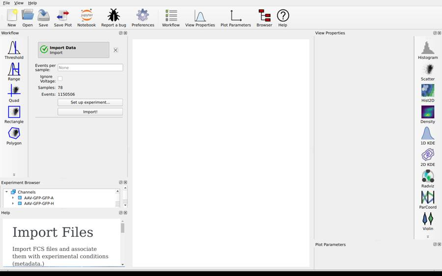
cu click 408 693; sleep 1; cu click 408 594; sleep 1; cu click 20 9; sleep 1; cu screenshot /tmp/screen.png
{
"file_path": "/tmp/screen.png"
}/tmp/screen.png
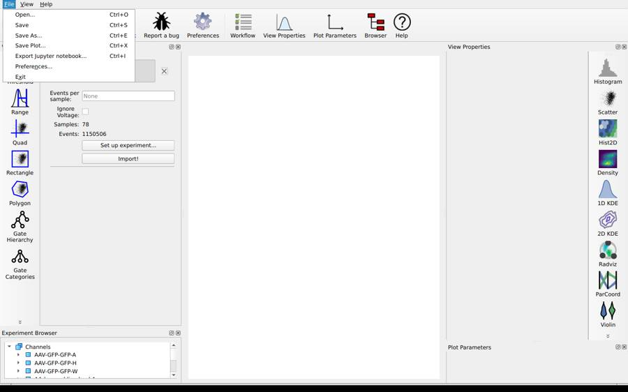
cu click 65 81; sleep 2; cu screenshot /tmp/screen.png
{
"file_path": "/tmp/screen.png"
}/tmp/screen.png
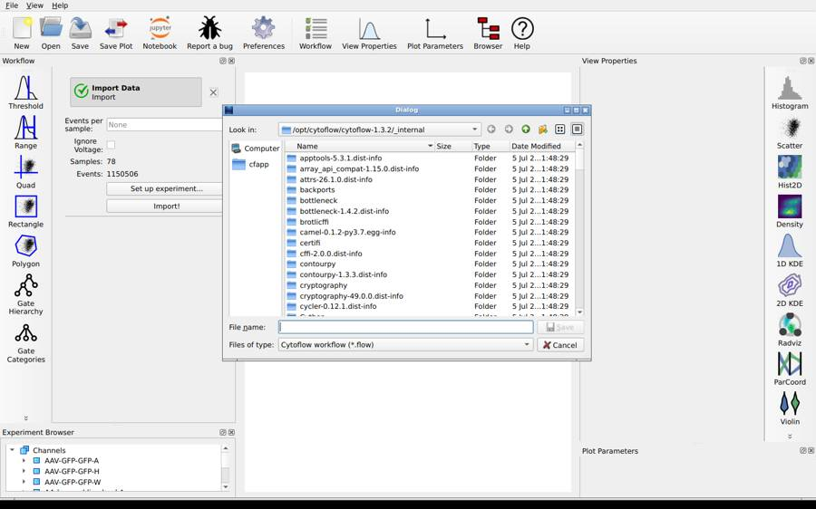
cu paste "/task/outputs/workflow.flow"; sleep 0.5; cu key Return; sleep 2; ls -la /task/outputs; cu click 408 764; sleep 1; cu click 1393 235; sleep 3; cu screenshot /tmp/screen.png
{
"file_path": "/tmp/screen.png"
}total 44 drwxrwsrwx 2 agent task 4096 Nov 10 19:15 . drwxr-xr-x 4 root root 4096 Nov 5 22:00 .. -rw-rw-r-- 1 cfapp task 34866 Nov 10 19:15 workflow.flow /tmp/screen.png
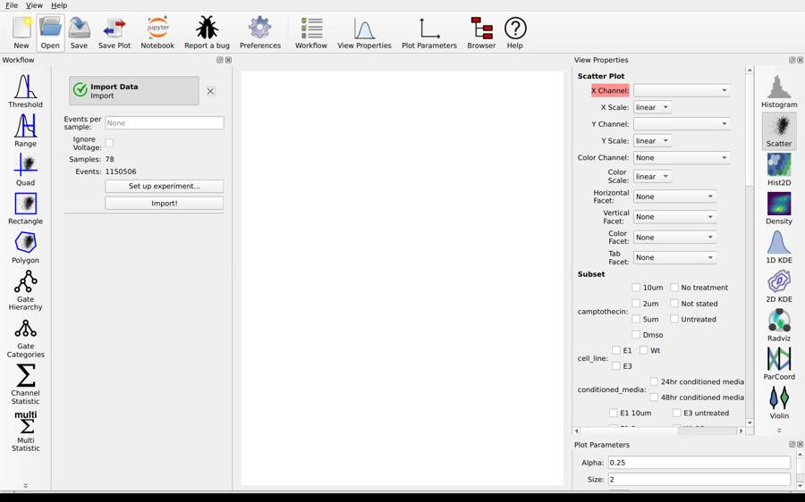
cu click 1219 162; sleep 1; cu screenshot /tmp/screen.png
{
"file_path": "/tmp/screen.png"
}/tmp/screen.png
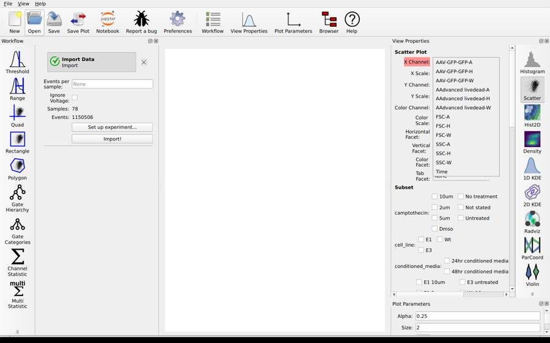
cu click 1160 307; sleep 1; cu click 1219 222; sleep 1; cu screenshot /tmp/screen.png
{
"file_path": "/tmp/screen.png"
}/tmp/screen.png
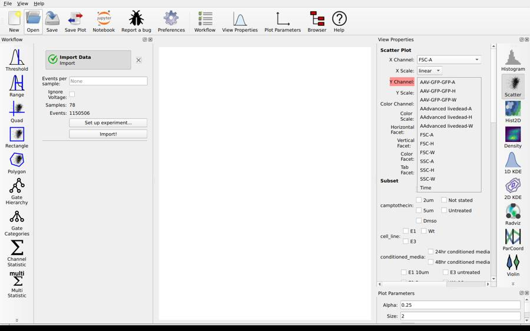
cu click 1160 438; sleep 15; cu screenshot /tmp/screen.png
{
"file_path": "/tmp/screen.png"
}/tmp/screen.png
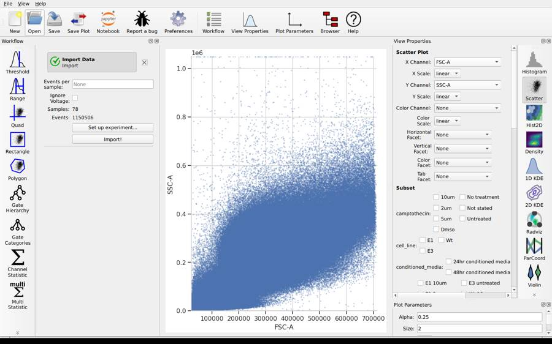
cu click 1393 373; sleep 2; cu screenshot /tmp/screen.png
{
"file_path": "/tmp/screen.png"
}/tmp/screen.png
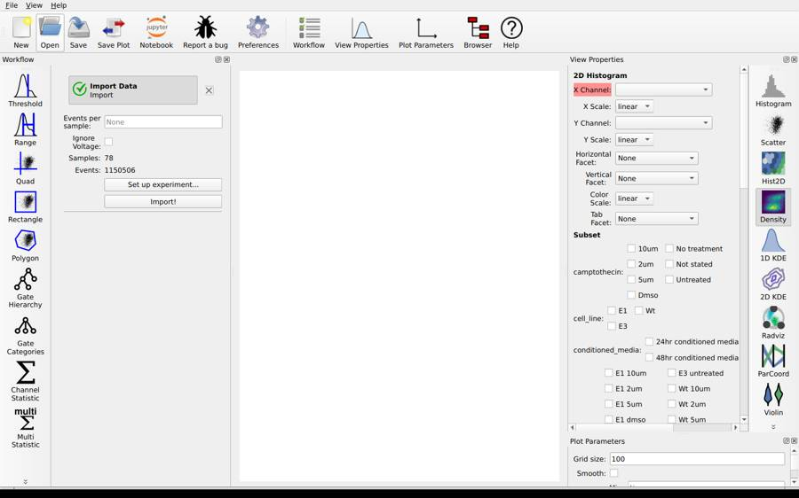
cat > /tmp/h.sh <<'EOF'
# helpers
shot(){ cu screenshot /tmp/screen.png >/dev/null; }
# pick X Y IDX : click combo at X,Y then item IDX (24px rows)
pick(){ cu click $1 $2; sleep 0.8; cu click $(( $1 - 20 )) $(( $2 + 1 + 24*$3 )); sleep 0.8; }
EOF
. /tmp/h.sh; pick 1195 162 6; pick 1195 222 9; sleep 12; shot{
"file_path": "/tmp/screen.png"
}(Bash completed with no output)
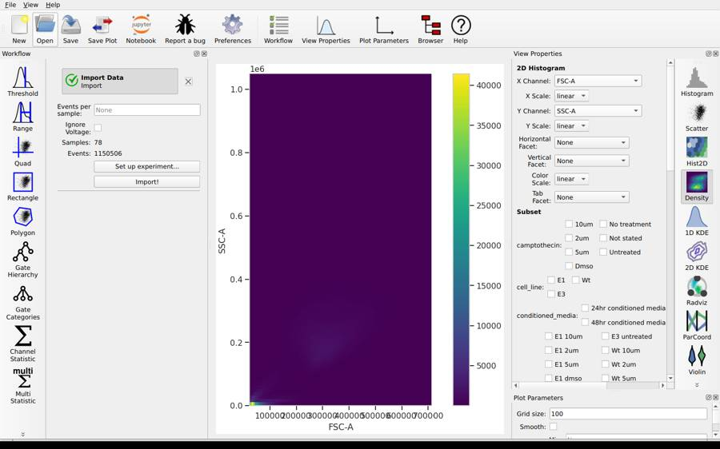
. /tmp/h.sh; cu click 1142 358; sleep 1; shot
{
"file_path": "/tmp/screen.png"
}(Bash completed with no output)
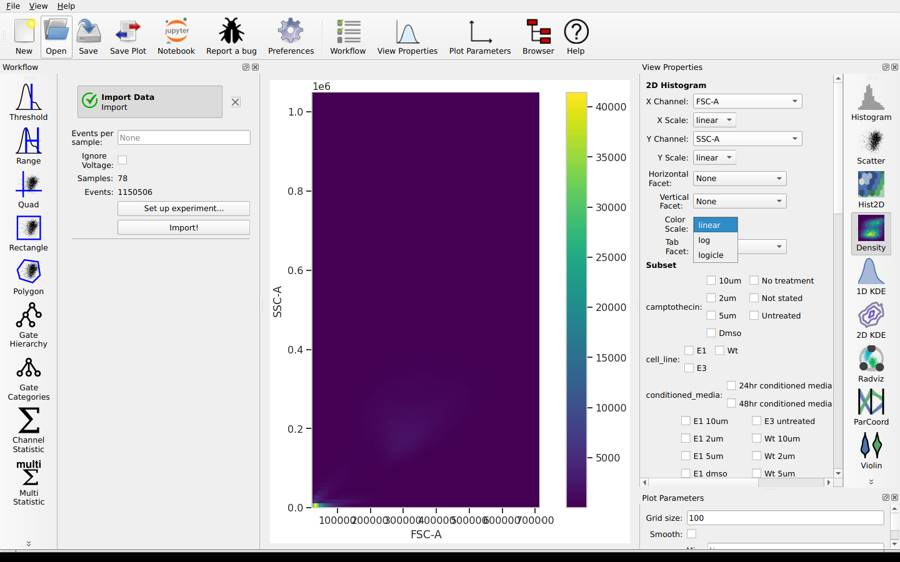
. /tmp/h.sh; cu click 1127 385; sleep 10; shot
{
"file_path": "/tmp/screen.png"
}(Bash completed with no output)
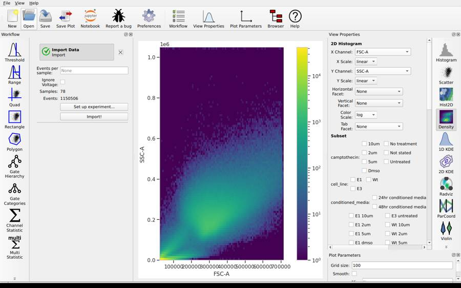
. /tmp/h.sh; cu click 45 440; sleep 3; shot
{
"file_path": "/tmp/screen.png"
}(Bash completed with no output)
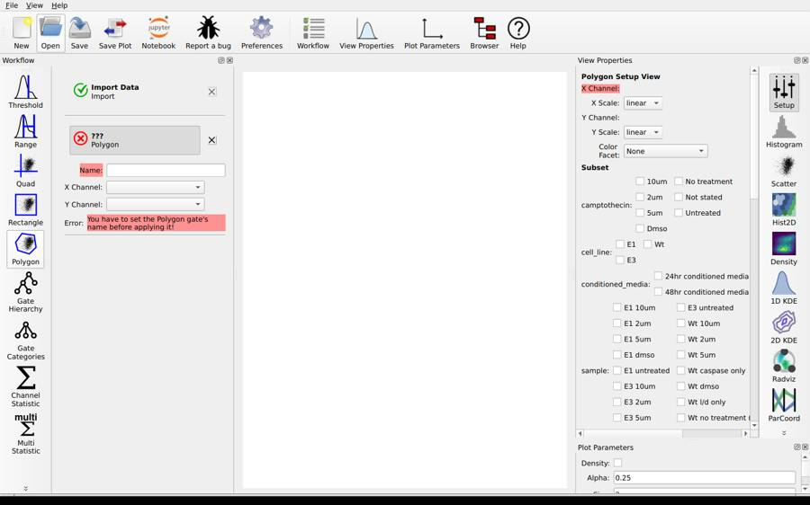
. /tmp/h.sh; cu click 294 303; cu type "Cells"; cu key Tab; sleep 1; pick 275 333 6; pick 275 364 9; sleep 1; cu click 1098 825; sleep 15; shot
{
"file_path": "/tmp/screen.png"
}(Bash completed with no output)
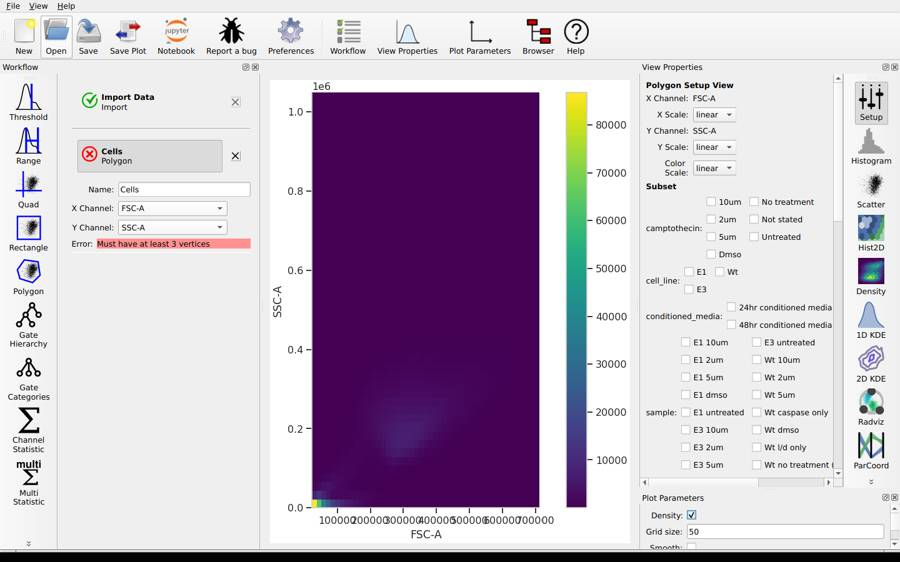
. /tmp/h.sh; cu click 1142 269; sleep 1; cu click 1127 296; sleep 15; shot
{
"file_path": "/tmp/screen.png"
}(Bash completed with no output)
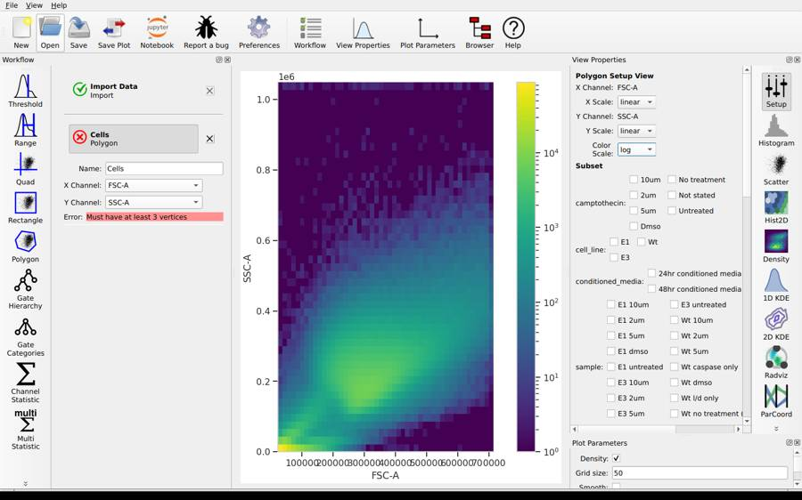
. /tmp/h.sh; cu drag 1232 783 1232 480; sleep 2; shot
{
"file_path": "/tmp/screen.png"
}(Bash completed with no output)
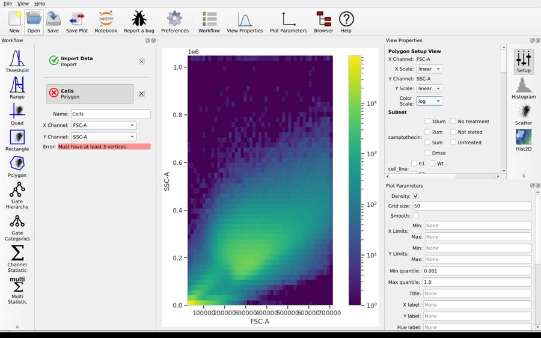
. /tmp/h.sh; cu click 1270 601; cu type "0"; cu key Tab; cu type "760000"; cu key Tab; cu type "0"; cu key Tab; cu type "1100000"; cu key Tab; sleep 15; shot
{
"file_path": "/tmp/screen.png"
}(Bash completed with no output)
. /tmp/h.sh; for p in "569 795" "558 722" "580 571" "660 390" "768 209" "896 209" "896 722" "768 789"; do cu click $p; sleep 0.7; done; cu click 633 801 double; sleep 20; shot
{
"file_path": "/tmp/screen.png"
}(Bash completed with no output)
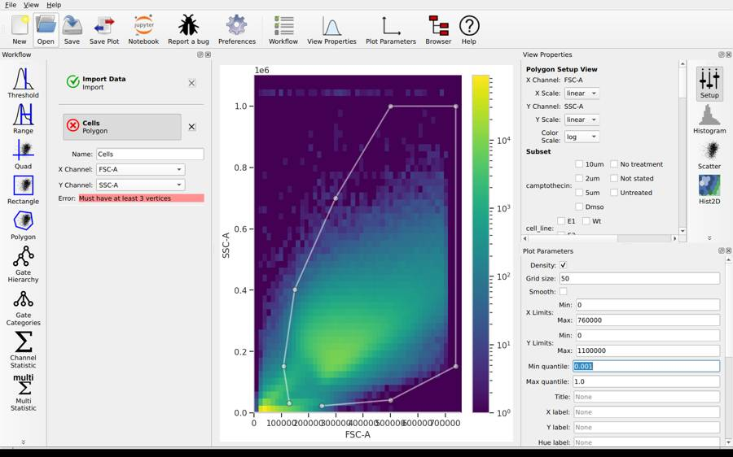
cat $(which cu)
#!/bin/bash
# Computer-use helper: the agent's only way to act on the screen.
# cu screenshot [path] -> PNG of the screen (default /tmp/screen.png); prints path
# cu click X Y [left|right|double]
# cu move X Y | cu drag X1 Y1 X2 Y2 | cu scroll X Y up|down [N]
# cu type "text" (keystrokes) | cu paste "text" (clipboard) | cu key KEYS (e.g. ctrl+s, Return)
# cu cursor -> current mouse position
export DISPLAY=${DISPLAY:-:1}
cmd=$1; shift
case "$cmd" in
screenshot) out=${1:-/tmp/screen.png}; scrot -o "$out" && echo "$out" ;;
click) xdotool mousemove "$1" "$2"; case "${3:-left}" in
left) xdotool click 1;; right) xdotool click 3;; double) xdotool click --repeat 2 1;; esac ;;
move) xdotool mousemove "$1" "$2" ;;
drag) xdotool mousemove "$1" "$2" mousedown 1 mousemove --sync "$3" "$4" mouseup 1 ;;
scroll) xdotool mousemove "$1" "$2"; b=$([ "$3" = up ] && echo 4 || echo 5); xdotool click --repeat "${4:-3}" $b ;;
type) xdotool type --delay 50 -- "$1" ;;
# paste: put text on the clipboard (detached owner process so it survives this command) then ctrl+v
# paste: own the clipboard (no -loops: Qt asks for TARGETS first, then the text), press ctrl+v,
# give Qt a moment to fetch it, then release. Robust both locally and on Modal.
paste) printf '%s' "$1" | xclip -quiet -selection clipboard -i >/dev/null 2>&1 & cp=$!
sleep 0.3; xdotool key ctrl+v; sleep 1; kill $cp 2>/dev/null; true ;;
key) xdotool key -- "$1" ;;
cursor) xdotool getmouselocation ;;
*) sed -n '2,9p' "$0"; exit 1 ;;
esac. /tmp/h.sh; cu click 633 801 double; sleep 15; shot
{
"file_path": "/tmp/screen.png"
}(Bash completed with no output)
. /tmp/h.sh; cu click 569 795; sleep 25; shot
{
"file_path": "/tmp/screen.png"
}(Bash completed with no output)
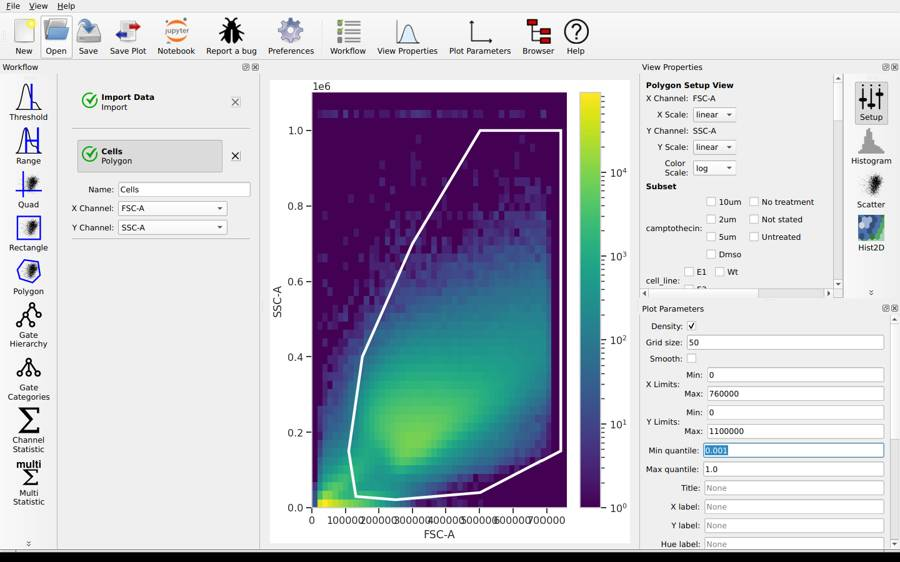
. /tmp/h.sh; cu click 45 440; sleep 3; shot
{
"file_path": "/tmp/screen.png"
}(Bash completed with no output)
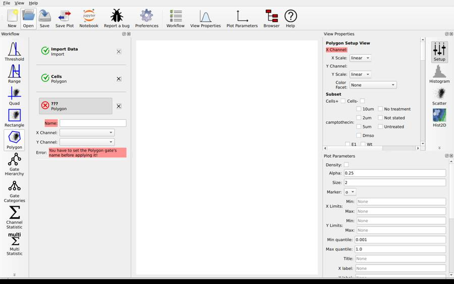
. /tmp/h.sh; cu click 294 390; cu type "Singlets"; cu key Tab; sleep 1; pick 275 420 6; pick 275 450 7; sleep 1; cu click 1088 320; sleep 1; cu click 1098 522; sleep 12; shot
{
"file_path": "/tmp/screen.png"
}(Bash completed with no output)
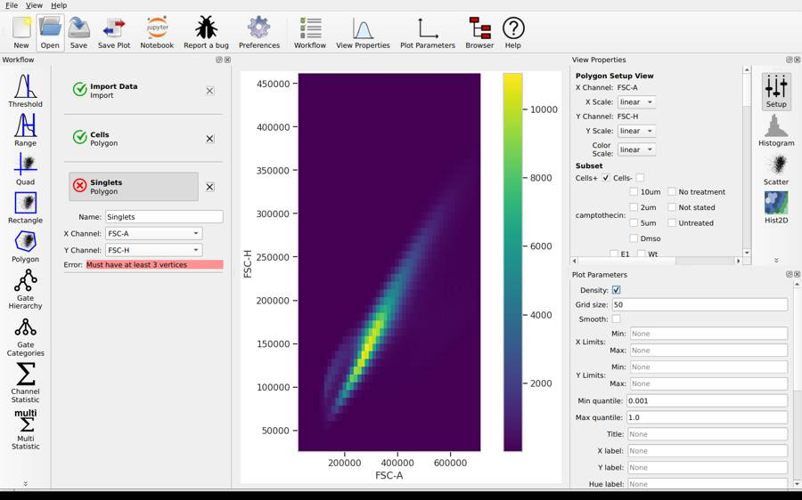
. /tmp/h.sh; cu click 1142 269; sleep 1; cu click 1127 296; sleep 8; cu click 1270 601; cu type "0"; cu key Tab; cu type "760000"; cu key Tab; cu type "0"; cu key Tab; cu type "480000"; cu key Tab; sleep 15; shot
{
"file_path": "/tmp/screen.png"
}(Bash completed with no output)
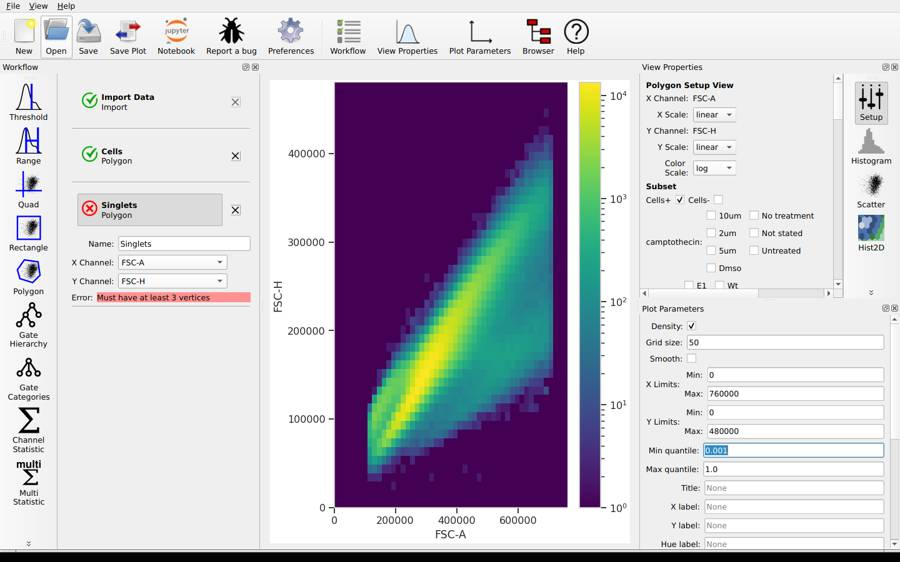
. /tmp/h.sh; for p in "584 749" "584 693" "682 473" "809 189" "898 147" "898 274" "731 530" "633 678" "584 749"; do cu click $p; sleep 0.8; done; sleep 25; shot
{
"file_path": "/tmp/screen.png"
}(Bash completed with no output)
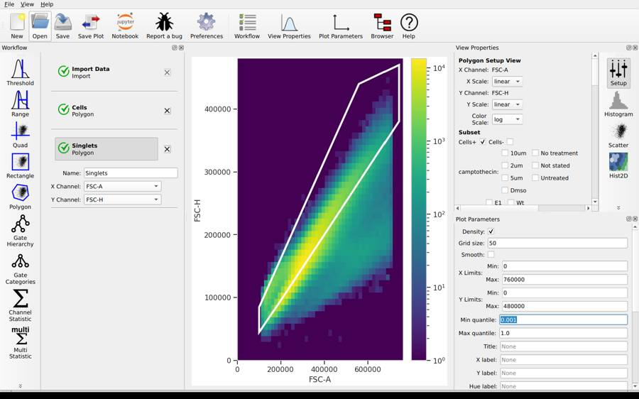
. /tmp/h.sh; cu drag 898 274 898 388; sleep 20; shot
{
"file_path": "/tmp/screen.png"
}(Bash completed with no output)
. /tmp/h.sh; for p in "731 586" "633 702" "584 763" "584 693" "682 466" "809 189" "898 147" "898 388"; do cu click $p; sleep 0.8; done; sleep 25; shot
{
"file_path": "/tmp/screen.png"
}(Bash completed with no output)
. /tmp/h.sh; cu key ctrl+s; sleep 2; cu drag 1232 481 1232 660; sleep 2; shot
{
"file_path": "/tmp/screen.png"
}(Bash completed with no output)
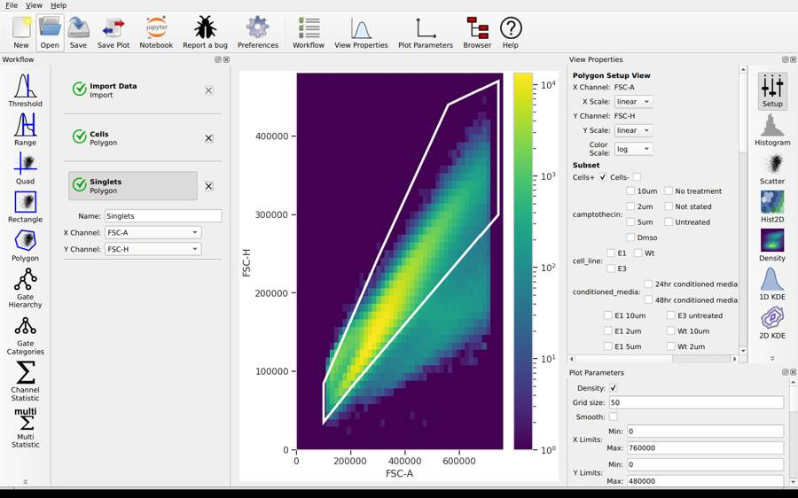
. /tmp/h.sh; cu click 1393 440; sleep 2; pick 1195 162 0; pick 1195 222 3; cu click 1142 192; sleep 0.8; cu click 1130 243; sleep 0.8; cu click 1142 252; sleep 0.8; cu click 1130 303; sleep 0.8; cu click 1142 358; sleep 0.8; cu click 1127 385; sleep 3; shot
{
"file_path": "/tmp/screen.png"
}(Bash completed with no output)
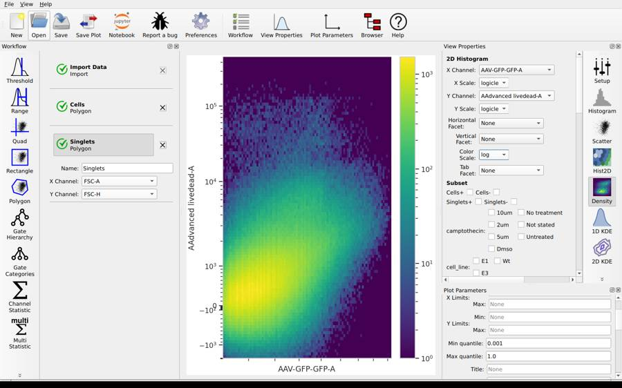
. /tmp/h.sh; cu click 1107 468; sleep 12; shot
{
"file_path": "/tmp/screen.png"
}(Bash completed with no output)
. /tmp/h.sh; cu click 1206 493; sleep 0.5; cu click 1206 521; sleep 0.5; cu click 1206 549; sleep 0.5; cu click 1183 286; sleep 1; shot
{
"file_path": "/tmp/screen.png"
}(Bash completed with no output)
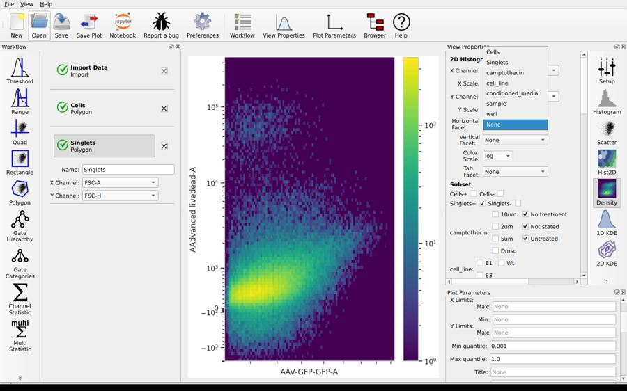
. /tmp/h.sh; cu click 1140 238; sleep 15; shot
{
"file_path": "/tmp/screen.png"
}(Bash completed with no output)
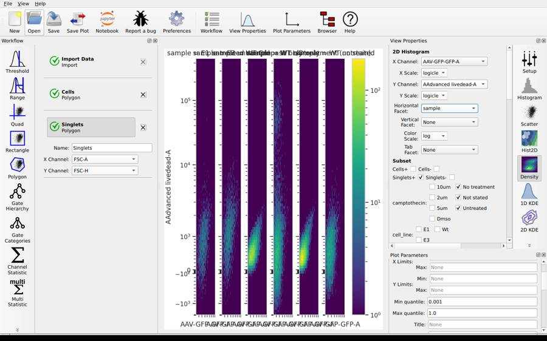
. /tmp/h.sh; cu click 1393 235; sleep 2; shot
{
"file_path": "/tmp/screen.png"
}(Bash completed with no output)
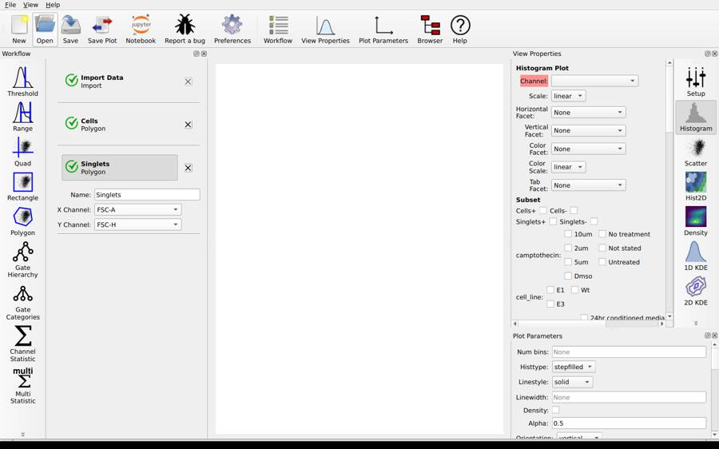
. /tmp/h.sh; pick 1190 162 0; cu click 1137 192; sleep 0.8; cu click 1125 243; sleep 0.8; cu click 1178 262; sleep 0.8; cu click 1140 214; sleep 0.8; cu click 1107 444; sleep 0.5; cu click 1206 469; sleep 0.5; cu click 1206 497; sleep 0.5; cu click 1206 525; sleep 12; shot
{
"file_path": "/tmp/screen.png"
}(Bash completed with no output)
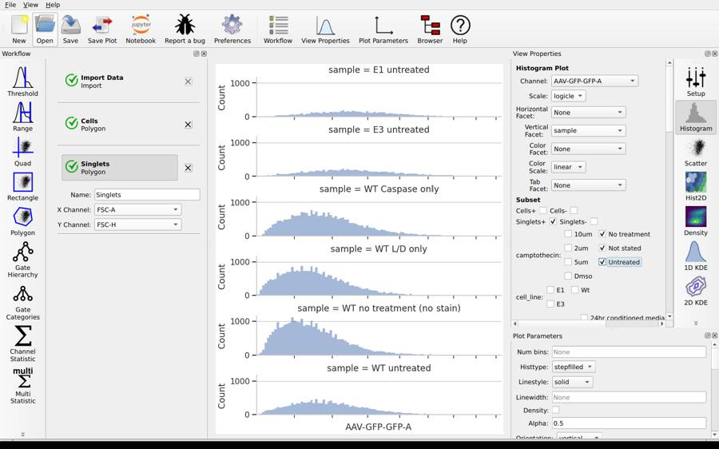
. /tmp/h.sh; cu click 1137 192; sleep 0.8; cu click 1125 219; sleep 1; cu click 1113 822; sleep 12; shot
{
"file_path": "/tmp/screen.png"
}(Bash completed with no output)
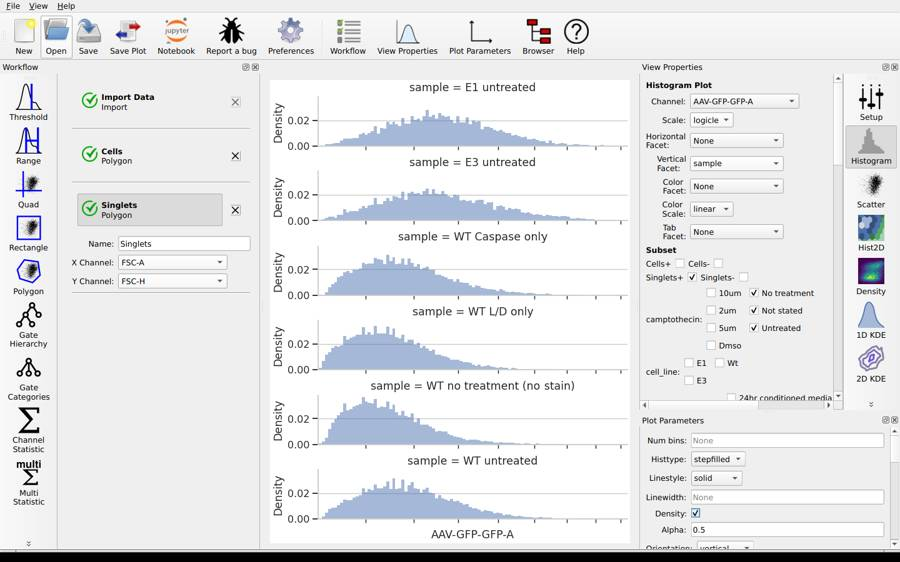
. /tmp/h.sh; cu click 1137 192; sleep 0.8; cu click 1125 168; sleep 12; shot
{
"file_path": "/tmp/screen.png"
}(Bash completed with no output)
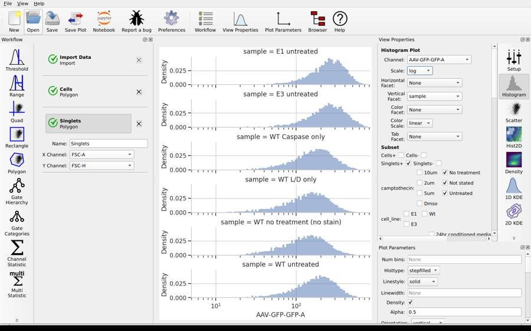
thinking
Controls show almost no caspase signal in untreated cells, so I'm now checking the camptothecin-treated wells for a clear caspase-positive population.
. /tmp/h.sh; cu click 1206 469; sleep 0.4; cu click 1206 497; sleep 0.4; cu click 1206 525; sleep 0.4; cu click 1138 469; sleep 0.4; cu click 1138 553; sleep 15; shot
{
"file_path": "/tmp/screen.png"
}(Bash completed with no output)
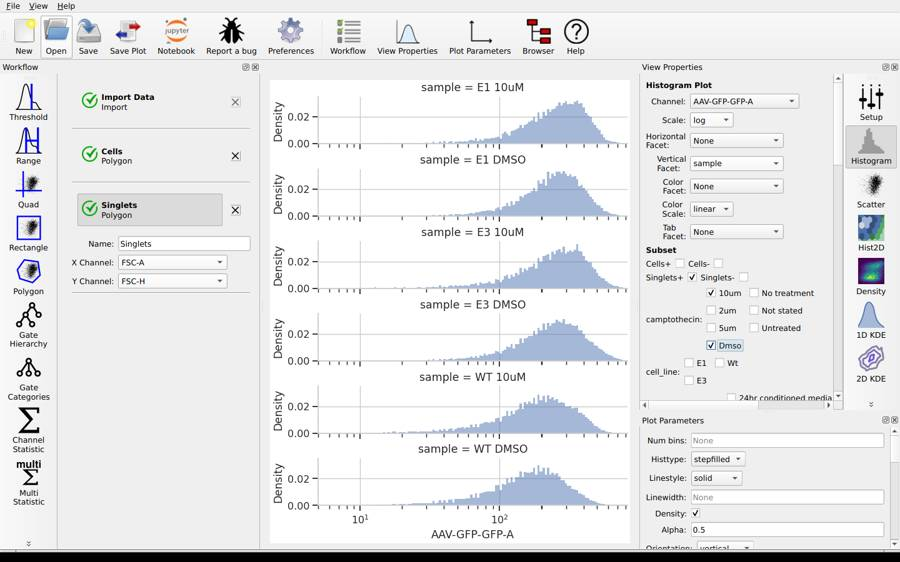
. /tmp/h.sh; cu click 1190 162; sleep 0.8; cu click 1170 234; sleep 15; shot
{
"file_path": "/tmp/screen.png"
}(Bash completed with no output)
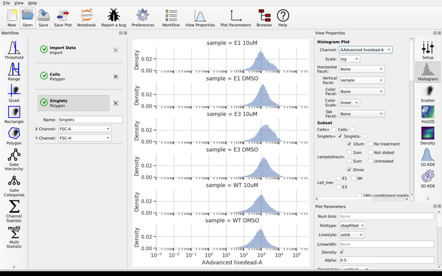
. /tmp/h.sh; cu click 1138 469; sleep 0.4; cu click 1138 553; sleep 0.4; cu click 1206 469; sleep 0.4; cu click 1206 497; sleep 0.4; cu click 1206 525; sleep 15; shot
{
"file_path": "/tmp/screen.png"
}(Bash completed with no output)
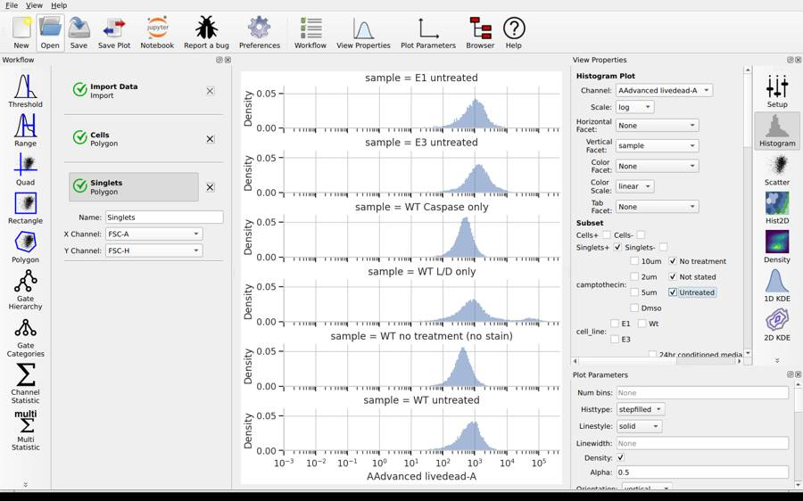
thinking
The dead-cell stain shows a bright population only in the L/D-only control, and BL1 caspase shows no clear positives even at 10 µM. I'm checking the full BL1 vs BL2 plot across all wells to confirm.
. /tmp/h.sh; cu click 1393 440; sleep 2; shot
{
"file_path": "/tmp/screen.png"
}(Bash completed with no output)
. /tmp/h.sh; cu click 1183 286; sleep 0.8; cu click 1140 334; sleep 1; cu click 1142 192; sleep 0.8; cu click 1130 168; sleep 0.8; cu click 1142 252; sleep 0.8; cu click 1130 228; sleep 0.8; cu click 1206 493; sleep 0.4; cu click 1206 521; sleep 0.4; cu click 1206 549; sleep 15; shot
{
"file_path": "/tmp/screen.png"
}(Bash completed with no output)
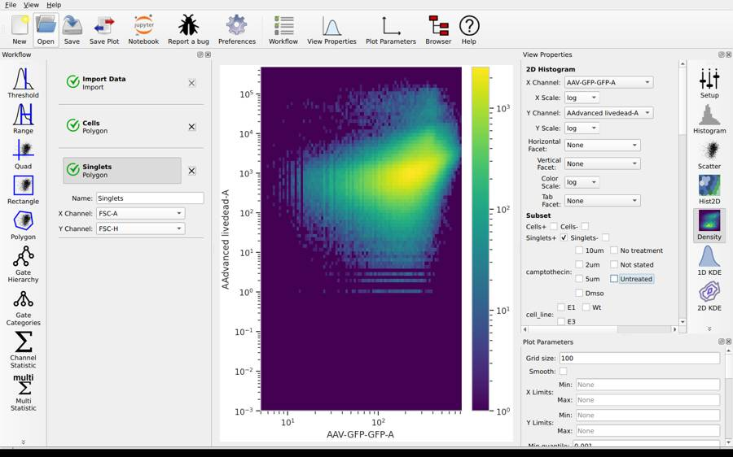
. /tmp/h.sh; cu click 1393 235; sleep 2; cu click 1190 162; sleep 0.8; cu click 1170 90; sleep 1; cu click 1178 262; sleep 0.8; cu click 1140 310; sleep 1; cu click 1137 192; sleep 0.8; cu click 1125 168; sleep 1; cu click 1206 469; sleep 0.4; cu click 1206 497; sleep 0.4; cu click 1206 525; sleep 12; shot
{
"file_path": "/tmp/screen.png"
}(Bash completed with no output)
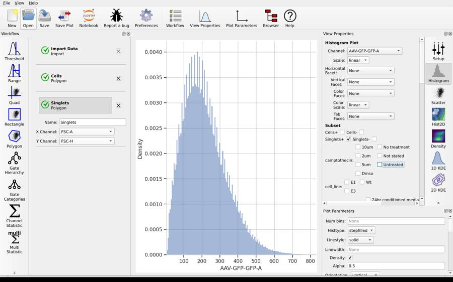
thinking
All BL1 (caspase) singlets sit in one peak near 180 with a max around 830, with no bright positive population. I'm checking for brighter events outside my scatter gates, such as in the debris region, before I interpret this.
. /tmp/h.sh; cu click 1107 444; sleep 0.5; cu click 1137 192; sleep 0.8; cu click 1125 219; sleep 15; shot
{
"file_path": "/tmp/screen.png"
}(Bash completed with no output)
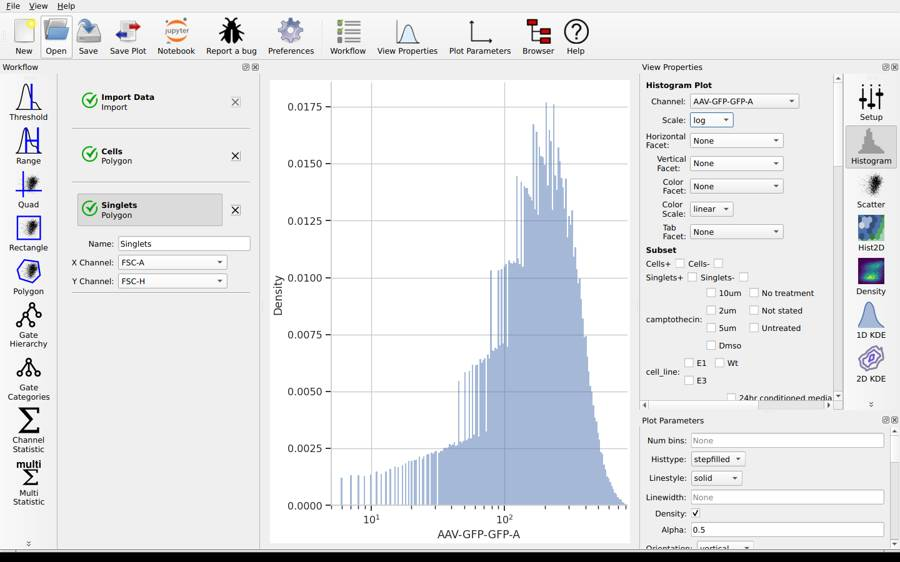
. /tmp/h.sh; cu click 1107 444; sleep 0.5; cu click 1113 822; sleep 0.5; cu click 1190 162; sleep 0.8; cu click 1170 234; sleep 15; shot
{
"file_path": "/tmp/screen.png"
}(Bash completed with no output)
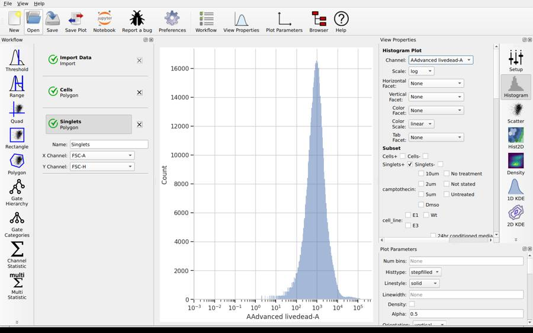
. /tmp/h.sh; cu click 45 235; sleep 3; shot
{
"file_path": "/tmp/screen.png"
}(Bash completed with no output)
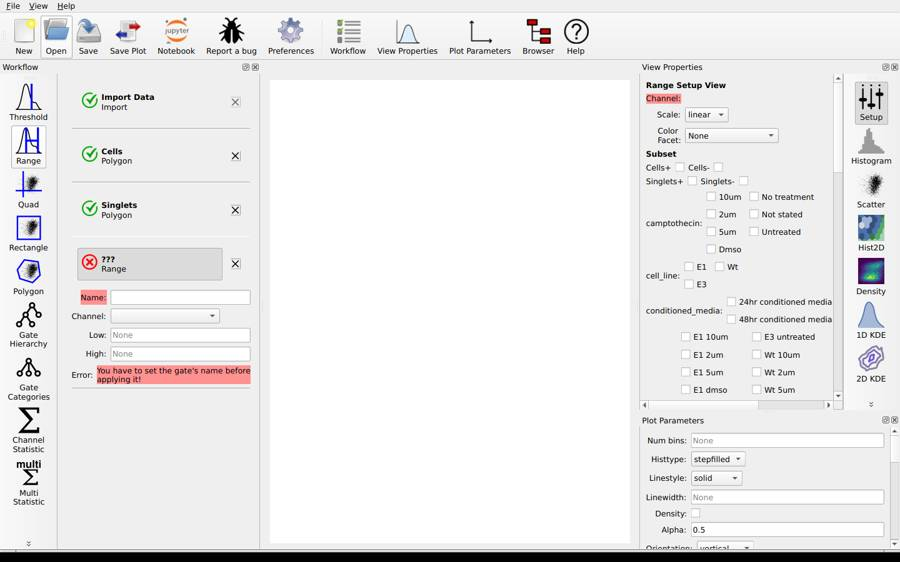
. /tmp/h.sh; cu click 288 476; cu type "Live"; cu key Tab; sleep 1; pick 264 506 3; cu click 288 536; cu type "-1000000"; cu key Tab; cu type "12000"; cu key Tab; sleep 1; cu click 1107 290; sleep 1; cu click 1125 184; sleep 0.8; cu click 1113 211; sleep 15; shot
{
"file_path": "/tmp/screen.png"
}(Bash completed with no output)
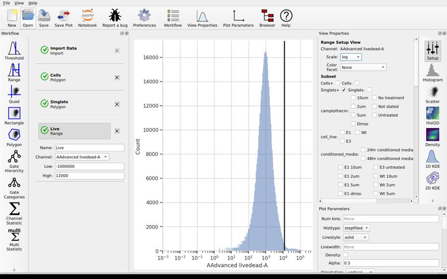
. /tmp/h.sh; cu click 45 165; sleep 3; shot
{
"file_path": "/tmp/screen.png"
}(Bash completed with no output)
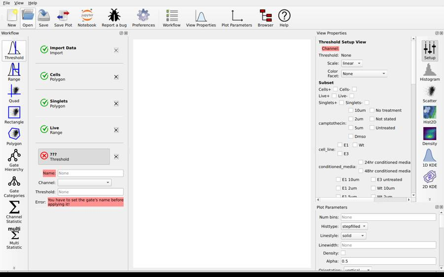
. /tmp/h.sh; cu click 294 563; cu type "Casp_pos"; cu key Tab; sleep 1; pick 274 593 0; cu click 294 623; cu type "500"; cu key Tab; sleep 1; cu click 1083 312; sleep 0.5; cu click 1107 334; sleep 15; shot
{
"file_path": "/tmp/screen.png"
}(Bash completed with no output)
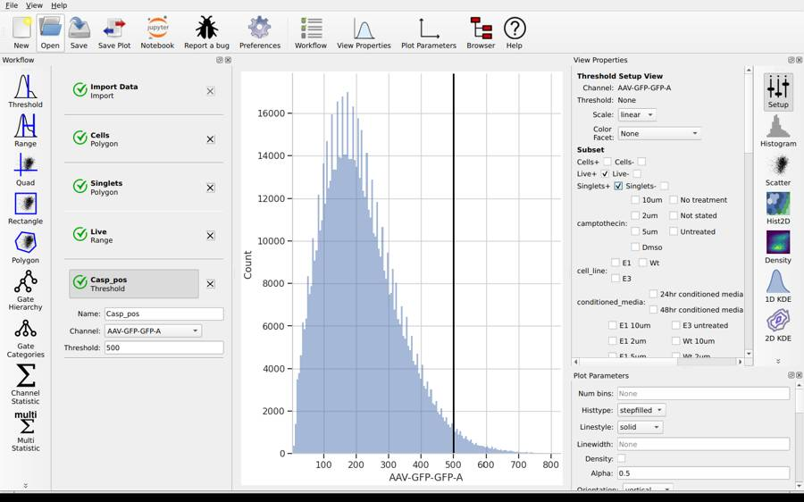
. /tmp/h.sh; cu key ctrl+s; sleep 1; cu click 45 690; sleep 3; shot
{
"file_path": "/tmp/screen.png"
}(Bash completed with no output)
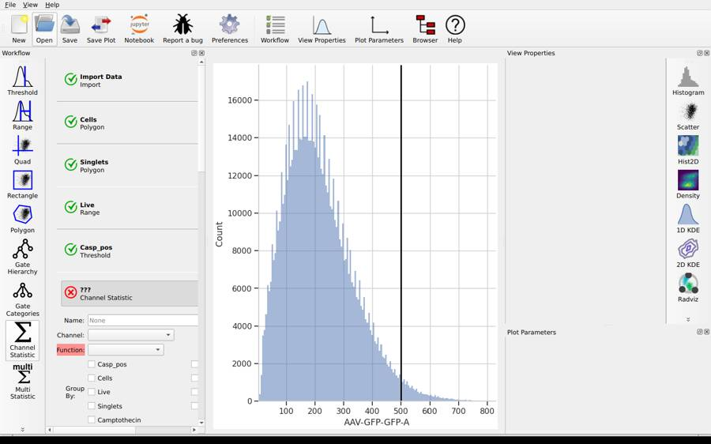
. /tmp/h.sh; cu click 288 650; cu type "counts"; cu key Tab; sleep 1; pick 264 679 6; sleep 1; cu click 254 709; sleep 1; shot
{
"file_path": "/tmp/screen.png"
}(Bash completed with no output)
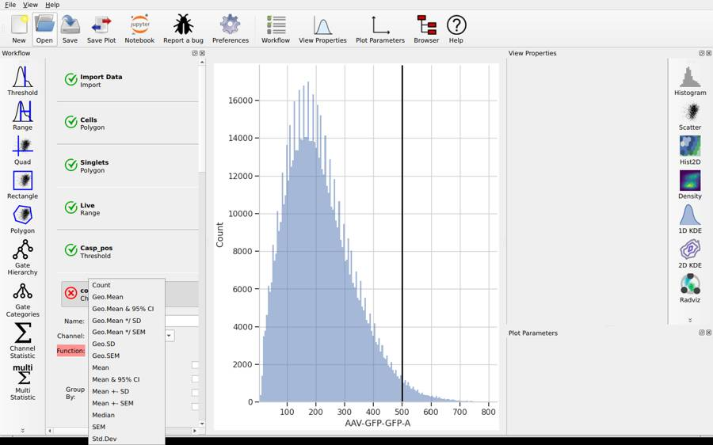
. /tmp/h.sh; cu click 205 577; sleep 1; cu click 185 738; sleep 0.5; cu click 185 766; sleep 0.5; cu click 185 794; sleep 0.5; cu click 185 823; sleep 1; cu scroll 250 700 down 10; sleep 1; shot
{
"file_path": "/tmp/screen.png"
}(Bash completed with no output)
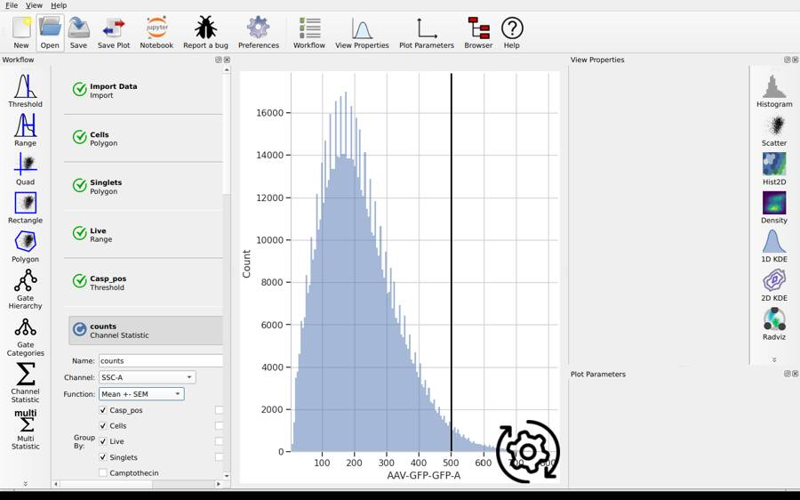
. /tmp/h.sh; cu click 254 709; sleep 1; shot
{
"file_path": "/tmp/screen.png"
}(Bash completed with no output)
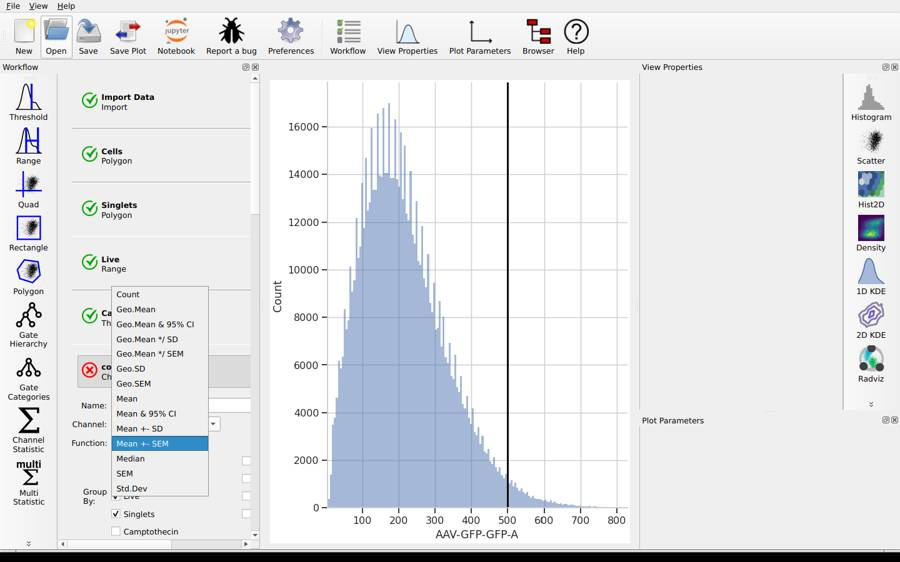
. /tmp/h.sh; cu click 205 471; sleep 1; cu scroll 130 840 down 15; sleep 1; shot
{
"file_path": "/tmp/screen.png"
}(Bash completed with no output)
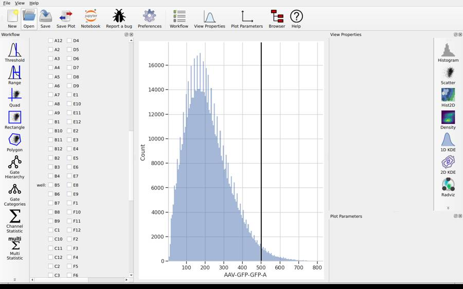
. /tmp/h.sh; cu scroll 130 840 up 9; sleep 1; shot
{
"file_path": "/tmp/screen.png"
}(Bash completed with no output)
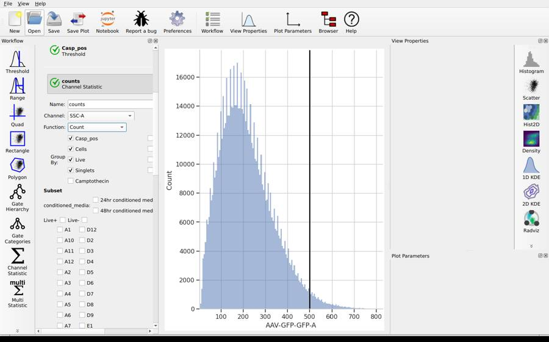
. /tmp/h.sh; cu drag 420 490 660 490; sleep 2; shot
{
"file_path": "/tmp/screen.png"
}(Bash completed with no output)
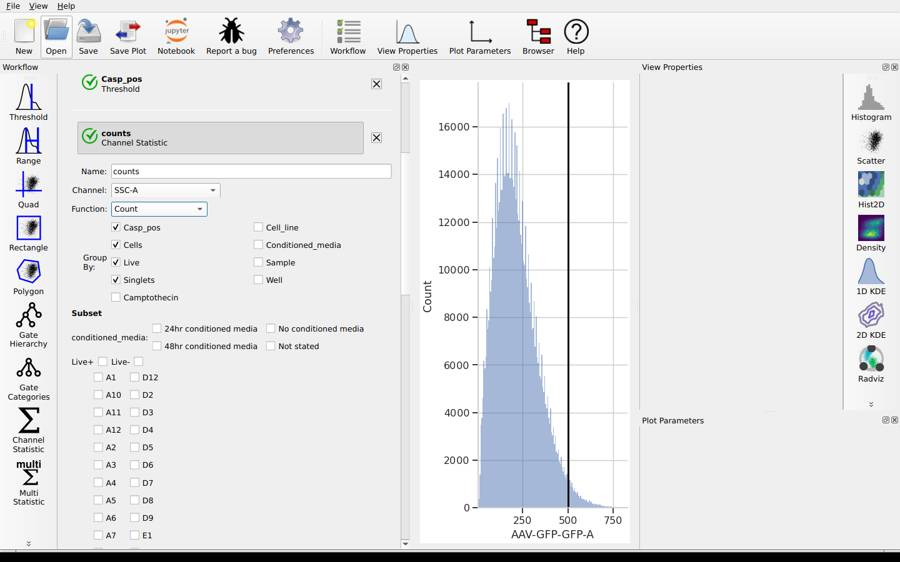
. /tmp/h.sh; cu click 413 448; sleep 5; cu click 1393 647; sleep 1; shot
{
"file_path": "/tmp/screen.png"
}(Bash completed with no output)
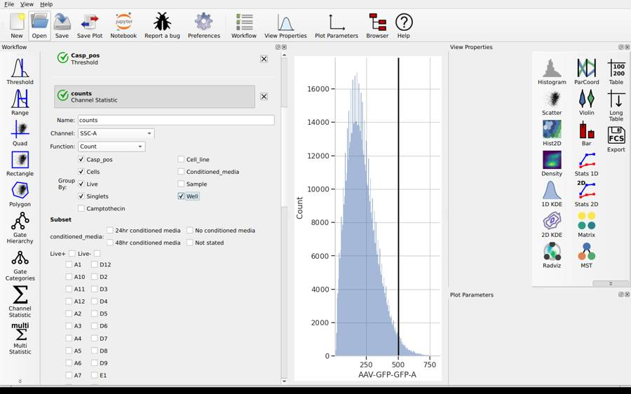
. /tmp/h.sh; cu click 1405 235; sleep 3; shot
{
"file_path": "/tmp/screen.png"
}(Bash completed with no output)
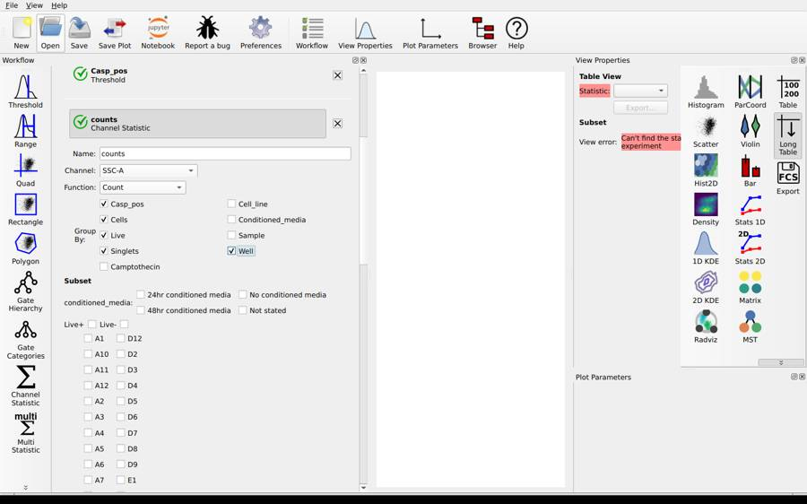
. /tmp/h.sh; cu click 1143 162; sleep 1; shot
{
"file_path": "/tmp/screen.png"
}(Bash completed with no output)
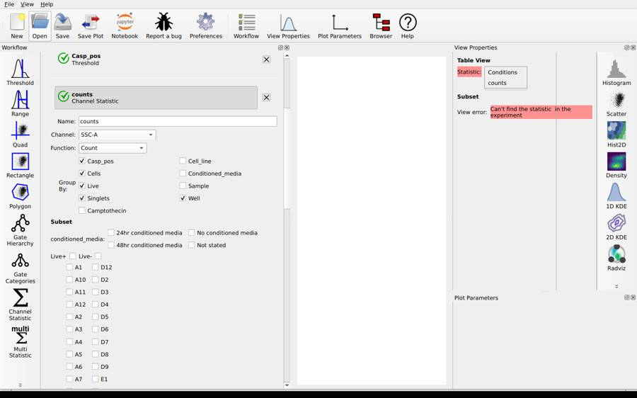
. /tmp/h.sh; cu click 1124 188; sleep 6; shot
{
"file_path": "/tmp/screen.png"
}(Bash completed with no output)
. /tmp/h.sh; sleep 5; cu click 1143 192; sleep 2; shot
{
"file_path": "/tmp/screen.png"
}(Bash completed with no output)
. /tmp/h.sh; mkdir -p /task/outputs/exports; chmod 777 /task/outputs/exports; cu paste "/task/outputs/exports/counts_t500.csv"; sleep 0.5; cu key Return; sleep 3; shot; ls -la /task/outputs/exports; head -20 /task/outputs/exports/counts_t500.csv; wc -l /task/outputs/exports/counts_t500.csv
total 24 drwxrwsrwx 2 root task 4096 Nov 10 19:35 . drwxrwsrwx 3 agent task 4096 Nov 10 19:34 .. -rw-rw-r-- 1 cfapp task 14989 Nov 10 19:35 counts_t500.csv Casp_pos,Cells,Live,Singlets,well,SSC-A 0,0,0,0,A1,81.0 0,0,0,0,A10,46.0 0,0,0,0,A11,74.0 0,0,0,0,A12,38.0 0,0,0,0,A2,99.0 0,0,0,0,A3,89.0 0,0,0,0,A4,21.0 0,0,0,0,A5,45.0 0,0,0,0,A6,67.0 0,0,0,0,A7,69.0 0,0,0,0,A8,40.0 0,0,0,0,A9,57.0 0,0,0,0,B10,22.0 0,0,0,0,B11,26.0 0,0,0,0,B12,32.0 0,0,0,0,B2,30.0 0,0,0,0,B3,8.0 0,0,0,0,B4,15.0 0,0,0,0,B5,9.0 902 /task/outputs/exports/counts_t500.csv
mkdir -p /tmp/work && cat > /tmp/work/tab.py <<'EOF'
import pandas as pd, sys
f=sys.argv[1]
d=pd.read_csv(f)
valcol=d.columns[-1]
lay=pd.read_csv('/task/inputs/plate_layout.csv')
def agg(mask):
return d[mask].groupby('well')[valcol].sum()
r=pd.DataFrame({'all':d.groupby('well')[valcol].sum()})
c=d.Cells==1; s=c&(d.Singlets==1); l=s&(d.Live==1); p=l&(d.Casp_pos==1)
r['cells']=agg(c); r['singlets']=agg(s); r['live']=agg(l); r['casp_live']=agg(p); r['casp_sing']=agg(s&(d.Casp_pos==1))
r['dead_casp']=agg(s&(d.Live==0)&(d.Casp_pos==1))
r=r.fillna(0).astype(int)
r['%cells']=100*r.cells/r['all']; r['%sing']=100*r.singlets/r.cells; r['%live']=100*r.live/r.singlets
r['%casp_live']=100*r.casp_live/r.live; r['%casp_sing']=100*r.casp_sing/r.singlets
r=lay.set_index('well').join(r)[['sample','conditioned_media','all','cells','singlets','live','casp_live','%cells','%sing','%live','%casp_live','%casp_sing']]
pd.set_option('display.width',250); pd.set_option('display.max_rows',200)
print(r.round(2).to_string())
r.to_csv('/tmp/work/tab.csv')
EOF
python3 /tmp/work/tab.py /task/outputs/exports/counts_t500.csvsample conditioned_media all cells singlets live casp_live %cells %sing %live %casp_live %casp_sing well A1 WT 10uM 24hr conditioned media 30920 21442 19662 19414 265 69.35 91.70 98.74 1.36 1.42 A2 WT 5uM 24hr conditioned media 31266 20913 19809 19559 215 66.89 94.72 98.74 1.10 1.12 A3 WT 2uM 24hr conditioned media 38748 23025 21695 21510 220 59.42 94.22 99.15 1.02 1.05 A4 WT DMSO 24hr conditioned media 34861 32772 31346 31034 175 94.01 95.65 99.00 0.56 0.58 A5 WT 10uM 48hr conditioned media 14011 9666 9045 8836 129 68.99 93.58 97.69 1.46 1.54 A6 WT 5uM 48hr conditioned media 25118 17230 16318 16144 174 68.60 94.71 98.93 1.08 1.10 A7 WT 2uM 48hr conditioned media 27544 17785 16817 16695 154 64.57 94.56 99.27 0.92 0.95 A8 WT DMSO 48hr conditioned media 30067 27970 26845 26654 141 93.03 95.98 99.29 0.53 0.56 A9 WT 10uM No conditioned media 17224 11324 10593 10534 186 65.75 93.54 99.44 1.77 1.77 A10 WT 5uM No conditioned media 24604 17524 16440 16309 215 71.22 93.81 99.20 1.32 1.33 A11 WT 2uM No conditioned media 38346 25418 23927 23771 267 66.29 94.13 99.35 1.12 1.15 A12 WT DMSO No conditioned media 31708 29533 27890 27627 175 93.14 94.44 99.06 0.63 0.67 B1 E1 10uM 24hr conditioned media 9849 4341 4015 4014 253 44.08 92.49 99.98 6.30 6.30 B2 E1 5uM 24hr conditioned media 10963 4972 4753 4734 189 45.35 95.60 99.60 3.99 4.00 B3 E1 2uM 24hr conditioned media 14921 6577 6296 6287 276 44.08 95.73 99.86 4.39 4.42 B4 E1 DMSO 24hr conditioned media 12172 10271 9883 9849 334 84.38 96.22 99.66 3.39 3.42 B5 E1 10uM 48hr conditioned media 5068 2365 2231 2194 78 46.67 94.33 98.34 3.56 3.68 B6 E1 5uM 48hr conditioned media 9638 5426 5155 5120 128 56.30 95.01 99.32 2.50 2.52 B7 E1 2uM 48hr conditioned media 13360 6517 6276 6238 173 48.78 96.30 99.39 2.77 2.85 B8 E1 DMSO 48hr conditioned media 11210 8884 8607 8516 175 79.25 96.88 98.94 2.05 2.23 B9 E1 10uM No conditioned media 3505 1511 1433 1402 75 43.11 94.84 97.84 5.35 5.37 B10 E1 5uM No conditioned media 8268 4120 3947 3915 192 49.83 95.80 99.19 4.90 5.07 B11 E1 2uM No conditioned media 10609 5273 5088 5064 211 49.70 96.49 99.53 4.17 4.21 B12 E1 DMSO No conditioned media 9382 7884 7604 7536 310 84.03 96.45 99.11 4.11 4.21 C1 E3 10uM 24hr conditioned media 7495 3938 3664 3648 212 52.54 93.04 99.56 5.81 5.92 C2 E3 5uM 24hr conditioned media 10263 5847 5668 5610 278 56.97 96.94 98.98 4.96 5.03 C3 E3 2uM 24hr conditioned media 8563 5106 4978 4914 242 59.63 97.49 98.71 4.92 5.00 C4 E3 DMSO 24hr conditioned media 9241 6133 5997 5858 312 66.37 97.78 97.68 5.33 5.84 C5 E3 10uM 48hr conditioned media 3151 1405 1332 1294 67 44.59 94.80 97.15 5.18 5.48 C6 E3 5uM 48hr conditioned media 6099 3135 3021 2977 153 51.40 96.36 98.54 5.14 5.26 C7 E3 2uM 48hr conditioned media 8001 4508 4359 4309 267 56.34 96.69 98.85 6.20 6.45 C8 E3 DMSO 48hr conditioned media 8215 5933 5798 5648 275 72.22 97.72 97.41 4.87 5.35 C9 E3 10uM No conditioned media 4067 1938 1826 1794 105 47.65 94.22 98.25 5.85 5.86 C10 E3 5uM No conditioned media 8011 4457 4294 4230 255 55.64 96.34 98.51 6.03 6.17 C11 E3 2uM No conditioned media 9008 5290 5124 5093 300 58.73 96.86 99.40 5.89 6.01 C12 E3 DMSO No conditioned media 13163 10485 10232 10109 489 79.66 97.59 98.80 4.84 5.20 D1 WT 10uM 24hr conditioned media 22778 14756 13512 13450 179 64.78 91.57 99.54 1.33 1.32 D2 WT 5uM 24hr conditioned media 27593 18214 17228 17169 159 66.01 94.59 99.66 0.93 0.93 D3 WT 2uM 24hr conditioned media 27824 16309 15534 15403 170 58.61 95.25 99.16 1.10 1.11 D4 … [5,679 more characters not shown]
. /tmp/h.sh; cu key Escape; sleep 0.5; cu click 1393 647; sleep 1; cu click 1338 235; sleep 3; shot
{
"file_path": "/tmp/screen.png"
}(Bash completed with no output)
thinking
WT wells read about 1% positive and KO wells 4–6% on the caspase threshold, with little camptothecin effect. Next I'm plotting acquisition Time per well to check for clogs or wells that ran dry.
. /tmp/h.sh; cu click 1100 136; sleep 1; cu drag 660 490 330 490; sleep 2; shot
{
"file_path": "/tmp/screen.png"
}(Bash completed with no output)
. /tmp/h.sh; cu click 1182 162; sleep 1; shot
{
"file_path": "/tmp/screen.png"
}(Bash completed with no output)
. /tmp/h.sh; cu click 1128 355; sleep 1; cu click 1195 192; sleep 1; cu click 1160 481; sleep 1; cu scroll 1060 560 down 5; sleep 1; shot
{
"file_path": "/tmp/screen.png"
}(Bash completed with no output)
. /tmp/h.sh; cu click 1151 349; sleep 40; shot
{
"file_path": "/tmp/screen.png"
}(Bash completed with no output)
. /tmp/h.sh; cu click 1143 735; sleep 1; shot
{
"file_path": "/tmp/screen.png"
}(Bash completed with no output)
. /tmp/h.sh; cu click 1136 785; sleep 40; shot
{
"file_path": "/tmp/screen.png"
}(Bash completed with no output)
. /tmp/h.sh; cu click 45 165; sleep 3; shot
{
"file_path": "/tmp/screen.png"
}(Bash completed with no output)
. /tmp/h.sh; cu click 255 735; cu type "T1"; cu key Tab; sleep 0.5; cu key End; sleep 0.5; cu key Tab; cu type "2000"; cu key Tab; sleep 6; shot
{
"file_path": "/tmp/screen.png"
}(Bash completed with no output)
. /tmp/h.sh; cu click 45 165; sleep 3; shot
{
"file_path": "/tmp/screen.png"
}(Bash completed with no output)
. /tmp/h.sh; cu click 220 822; cu type "T2"; cu key Tab; sleep 0.5; cu key End; sleep 0.5; cu key Tab; cu type "4000"; cu key Tab; sleep 5; cu click 45 165; sleep 3; cu scroll 200 300 down 20; sleep 1; shot
{
"file_path": "/tmp/screen.png"
}(Bash completed with no output)
. /tmp/h.sh;
fill(){ cu click 230 737; cu type "$1"; cu key Tab; sleep 0.5; cu key End; sleep 0.5; cu key Tab; cu type "$2"; cu key Tab; sleep 6; }
fill T3 6000
for i in 4 5 6 7; do cu click 45 165; sleep 3; cu scroll 200 300 down 20; sleep 1; fill T$i $((i*2000)); done; shot{
"file_path": "/tmp/screen.png"
}(Bash completed with no output)
. /tmp/h.sh; cu click 45 690; sleep 3; cu drag 330 490 660 490; sleep 2; cu scroll 400 200 down 30; sleep 1; shot
{
"file_path": "/tmp/screen.png"
}(Bash completed with no output)
. /tmp/h.sh; cu scroll 400 200 up 8; sleep 1; shot
{
"file_path": "/tmp/screen.png"
}(Bash completed with no output)
. /tmp/h.sh; cu scroll 400 200 up 7; sleep 1; shot
{
"file_path": "/tmp/screen.png"
}(Bash completed with no output)
. /tmp/h.sh; cu scroll 400 200 up 3; sleep 1; shot
{
"file_path": "/tmp/screen.png"
}(Bash completed with no output)
. /tmp/h.sh; cu scroll 400 200 up 1; sleep 1; shot
{
"file_path": "/tmp/screen.png"
}(Bash completed with no output)
. /tmp/h.sh; cu click 400 172; cu type "timebins"; cu key Tab; sleep 0.5; cu key End; sleep 0.5; cu key Tab; sleep 0.5; cu key Home; sleep 1; shot
{
"file_path": "/tmp/screen.png"
}(Bash completed with no output)
. /tmp/h.sh; for p in "185 290" "185 374" "185 402" "185 430" "185 458" "413 261" "413 290" "413 318" "413 458"; do cu click $p; sleep 0.6; done; sleep 8; shot
{
"file_path": "/tmp/screen.png"
}(Bash completed with no output)
. /tmp/h.sh; cu click 1393 647; sleep 1; cu click 1405 235; sleep 3; cu click 1143 162; sleep 1; shot
{
"file_path": "/tmp/screen.png"
}(Bash completed with no output)
. /tmp/h.sh; cu click 1130 212; sleep 8; cu click 1143 192; sleep 2; cu paste "/task/outputs/exports/timebins.csv"; sleep 0.5; cu key Return; sleep 3; cu key ctrl+s; sleep 2; ls -la /task/outputs/exports /task/outputs; head -5 /task/outputs/exports/timebins.csv
/task/outputs: total 1428 drwxrwsrwx 3 agent task 4096 Nov 10 19:34 . drwxr-xr-x 4 root root 4096 Nov 5 22:00 .. drwxrwsrwx 2 root task 4096 Nov 10 19:42 exports -rw-rw-r-- 1 cfapp task 1446710 Nov 10 19:42 workflow.flow /task/outputs/exports: total 56 drwxrwsrwx 2 root task 4096 Nov 10 19:42 . drwxrwsrwx 3 agent task 4096 Nov 10 19:34 .. -rw-rw-r-- 1 cfapp task 14989 Nov 10 19:35 counts_t500.csv -rw-rw-r-- 1 cfapp task 31869 Nov 10 19:42 timebins.csv Cells,T1,T2,T3,T4,T5,T6,T7,well,Time 0,0,0,0,0,0,0,0,A1,1161.0 0,0,0,0,0,0,0,0,A10,850.0 0,0,0,0,0,0,0,0,A11,1539.0 0,0,0,0,0,0,0,0,A12,283.0
cat > /tmp/work/tb.py <<'EOF'
import pandas as pd, numpy as np
d=pd.read_csv('/task/outputs/exports/timebins.csv')
d['bin']=d[['T1','T2','T3','T4','T5','T6','T7']].sum(axis=1)
lay=pd.read_csv('/task/inputs/plate_layout.csv').set_index('well')
allp=d.pivot_table(index='well',columns='bin',values='Time',aggfunc='sum',fill_value=0)
cel=d[d.Cells==1].pivot_table(index='well',columns='bin',values='Time',aggfunc='sum',fill_value=0)
pd.set_option('display.width',250); pd.set_option('display.max_rows',200)
allp=allp.loc[lay.index]; cel=cel.loc[lay.index]
print("ALL events per 2000-unit time bin (bin7 = 14000+)");
a=allp.copy(); a['tot']=a.sum(axis=1); a['cv_bins0-6']=(allp.iloc[:,:7].std(axis=1)/allp.iloc[:,:7].mean(axis=1)).round(2); a['min/med']=(allp.iloc[:,:7].min(axis=1)/allp.iloc[:,:7].median(axis=1)).round(2); a['max/med']=(allp.iloc[:,:7].max(axis=1)/allp.iloc[:,:7].median(axis=1)).round(2)
print(a.to_string())
print("\n%Cells per bin")
print((100*cel/allp).round(0).astype(int).to_string())
EOF
python3 /tmp/work/tb.pyALL events per 2000-unit time bin (bin7 = 14000+) bin 0 1 2 3 4 5 6 7 tot cv_bins0-6 min/med max/med well A1 3255.0 3769.0 3537.0 3628.0 4625.0 4510.0 3702.0 3894.0 30920.0 0.13 0.88 1.25 A2 3740.0 3977.0 3598.0 4293.0 5046.0 4138.0 3589.0 2885.0 31266.0 0.13 0.90 1.27 A3 4161.0 4574.0 4507.0 4586.0 5407.0 5611.0 4516.0 5386.0 38748.0 0.11 0.91 1.23 A4 3344.0 4053.0 3987.0 3974.0 5396.0 5657.0 4112.0 4338.0 34861.0 0.19 0.83 1.40 A5 1597.0 1676.0 1572.0 1892.0 2159.0 1933.0 1594.0 1588.0 14011.0 0.13 0.94 1.29 A6 2591.0 2966.0 2894.0 3011.0 3740.0 3679.0 2882.0 3355.0 25118.0 0.14 0.87 1.26 A7 3157.0 3312.0 3430.0 3706.0 3748.0 3348.0 2877.0 3966.0 27544.0 0.09 0.86 1.12 A8 3425.0 3531.0 3468.0 4098.0 5220.0 4369.0 3090.0 2866.0 30067.0 0.19 0.88 1.48 A9 2084.0 2137.0 2083.0 2351.0 2589.0 2263.0 1847.0 1870.0 17224.0 0.11 0.86 1.21 A10 2612.0 2995.0 2822.0 3072.0 3610.0 3587.0 2674.0 3232.0 24604.0 0.13 0.87 1.21 A11 4119.0 5566.0 4426.0 4747.0 5567.0 5325.0 4193.0 4403.0 38346.0 0.13 0.87 1.17 A12 3733.0 4022.0 3770.0 4456.0 4883.0 4160.0 3180.0 3504.0 31708.0 0.14 0.79 1.21 B1 1070.0 1163.0 1163.0 1234.0 1272.0 1366.0 1103.0 1478.0 9849.0 0.09 0.92 1.17 B2 1328.0 1253.0 1324.0 1454.0 1553.0 1457.0 1158.0 1436.0 10963.0 0.10 0.87 1.17 B3 1700.0 1860.0 1787.0 1981.0 2065.0 1952.0 1623.0 1953.0 14921.0 0.09 0.87 1.11 B4 1318.0 1459.0 1497.0 1659.0 1997.0 1613.0 1226.0 1403.0 12172.0 0.16 0.82 1.33 B5 569.0 623.0 637.0 675.0 734.0 690.0 519.0 621.0 5068.0 0.12 0.81 1.15 B6 1067.0 1192.0 1139.0 1283.0 1400.0 1305.0 1008.0 1244.0 9638.0 0.12 0.85 1.17 B7 1509.0 1650.0 1650.0 1716.0 2001.0 1765.0 1421.0 1648.0 13360.0 0.11 0.86 1.21 B8 1196.0 1340.0 1351.0 1681.0 1813.0 1485.0 1129.0 1215.0 11210.0 0.17 0.84 1.34 B9 398.0 414.0 414.0 501.0 514.0 444.0 401.0 419.0 3505.0 0.11 0.96 1.24 B10 984.0 1001.0 984.0 1159.0 1293.0 1051.0 868.0 928.0 8268.0 0.13 0.87 1.29 B11 1113.0 1228.0 1238.0 1357.0 1494.0 1470.0 1163.0 1546.0 10609.0 0.11 0.90 1.21 B12 1029.0 1165.0 1154.0 1368.0 1629.0 1275.0 899.0 863.0 9382.0 0.20 0.77 1.40 C1 875.0 955.0 924.0 1085.0 1148.0 942.0 788.0 778.0 7495.0 0.13 0.84 1.22 C2 1154.0 1262.0 1293.0 1400.0 1630.0 1385.0 1041.0 1098.0 10263.0 0.14 0.81 1.26 C3 1010.0 1264.0 1070.0 1266.0 1287.0 1038.0 829.0 799.0 8563.0 0.15 0.77 1.20 C4 827.0 996.0 1076.0 1198.0 1370.0 1368.0 1080.0 1326.0 9241.0 0.17 0.77 1.27 C5 338.0 391.0 383.0 417.0 479.0 435.0 338.0 370.0 3151.0 0.13 0.86 1.23 C6 714.0 808.0 702.0 895.0 946.0 785.0 632.0 617.0 6099.0 0.14 0.81 1.21 C7 923.0 970.0 962.0 1148.0 1272.0 1091.0 794.0 841.0 8001.0 0.16 0.82 1.31 C8 862.0 1017.0 1022.0 1282.0 1377.0 1062.0 853.0 740.0 8215.0 0.19 0.83 1.35 C9 432.0 465.0 471.0 530.0 590.0 546.0 431.0 602.0 4067.0 0.12 0.92 1.25 C10 846.0 983.0 1074.0 1212.0 1318.0 1014.0 864.0 700.0 8011.0 0.17 0.83 1.30 C11 1018.0 1007.0 1096.0 1314.0 1480.0 1210.0 984.0 899.0 9008.0 0.16 0.90 1.35 C12 1527.0 1589.0 1544.0 1971.0 2208.0 1713.0 1347.0 1264.0 13163.0 0.17 0.85 1.39 D1 2320.0 2718.0 3002.0 3372.0 3693.0 3006.0 2469.0 2198.0 22778.0 0.17 0.77 1.23 D2 2562.0 3077.0 3224.0 3640.0 4348.0 3939.0 3152.0 3651.0 27593.0 0.17 0.79 1.35 D3 2880.0 3192.0 3203.0 3539.0 4067.0 3867.0 2992.0 4084.0 27824.0 0.13 0.90 1.27 D4 2073.0 3034.0 2825.0 3595.0 4106.0 3368.0 2553.0 2997.0 24551.0 0.22 0.68 1.35 D5 643.0 804.0 813.0 1003.0 1066.0 839.0 715.0 571.0 6454.0 0.18 0.79 1.31 D6 1901.0 2003.0 2213.0 2614.0 2713.0 2256.0 1892.0 1474.0 17066.0 0.15 0.85 1.23 D7 2641.0 2857.0 2984.0 3319.0 3700.0 3120.0 2533.0 2099.0 23253.0 0.13 0.85 1.24 D8 2095.0 2430.0 2618.0 3331.0 3848.0 3440.0 2484.0 3053.0 23299.0 0.22 0.80 1.47 D9 964.0 1025.0 1051.0 1180.0 1353.0 1268.0 977.0 798.0 8616.0 0.14 0.92 1.29 D10 2215.0 2250.0 2296.0 2618.0 3046.0 2994.0 2277.0 1961.0 19657.0 0.14 0.96 1.33 D11 3378.0 3611.0 3536.0 3723.0 4611.0 4879.0 3778.0 4351.0 31867.0 0.15 0.91 1.31 D12 2595.0 2798.0 2922.0 3336.0 4076.0 3456.0 2704.0 3369.0 25256.0 0.17 0.89 1.39 E1 1097.0 1124.0 1127.0 1191.0 1281.0 1357.0 1127.0 1517.0 9821.0 0.08 0.97 1.20 E2 1198.0 1271.0 1254.0 1346.0 1501.0 1400.0 1176.0 1535.0 10681.0 0.09 0.93 1.18 E3 1389.0 1482.0 1516.0 1680.0 1719.0 1540.0 1274.0 1711.0 12311.0 0.10 0.84 1.13 E4 882.0 1039.0 1051.0 1203.0 1632.0 1613.0 1218.0 1421.0 10059.0 0.23 0.73 1.36 E5 504.0 485.0 523.0 569.0 615.0 580.0 502.0 659.0 4437.0 0.09 0.93 1.18 E6 850 … [5,665 more characters not shown]
cat > /tmp/work/deb.py <<'EOF'
import pandas as pd
d=pd.read_csv('/task/outputs/exports/counts_t500.csv'); v='SSC-A'
lay=pd.read_csv('/task/inputs/plate_layout.csv').set_index('well')
nc=d[d.Cells==0]
r=pd.DataFrame({'debris':nc.groupby('well')[v].sum(),'deb_dead':nc[nc.Live==0].groupby('well')[v].sum(),'deb_casp':nc[nc.Casp_pos==1].groupby('well')[v].sum()}).fillna(0)
c=d[d.Cells==1]
r['cells']=c.groupby('well')[v].sum(); r['cell_dead']=c[c.Live==0].groupby('well')[v].sum()
r['doublets']=c[c.Singlets==0].groupby('well')[v].sum(); r['dbl_casp']=c[(c.Singlets==0)&(c.Casp_pos==1)].groupby('well')[v].sum()
r=r.fillna(0)
r['%deb_dead']=100*r.deb_dead/r.debris; r['%deb_casp']=100*r.deb_casp/r.debris; r['%cell_dead']=100*r.cell_dead/r.cells; r['%dbl_casp']=100*r.dbl_casp/r.doublets
r=lay[['sample','conditioned_media']].join(r)
pd.set_option('display.width',250); pd.set_option('display.max_rows',200)
print(r.round(2).to_string())
EOF
python3 /tmp/work/deb.py | head -90sample conditioned_media debris deb_dead deb_casp cells cell_dead doublets dbl_casp %deb_dead %deb_casp %cell_dead %dbl_casp well A1 WT 10uM 24hr conditioned media 9478.0 95.0 1.0 21442.0 278.0 1780.0 230.0 1.00 0.01 1.30 12.92 A2 WT 5uM 24hr conditioned media 10353.0 108.0 0.0 20913.0 276.0 1104.0 158.0 1.04 0.00 1.32 14.31 A3 WT 2uM 24hr conditioned media 15723.0 105.0 1.0 23025.0 198.0 1330.0 204.0 0.67 0.01 0.86 15.34 A4 WT DMSO 24hr conditioned media 2089.0 31.0 1.0 32772.0 343.0 1426.0 57.0 1.48 0.05 1.05 4.00 A5 WT 10uM 48hr conditioned media 4345.0 56.0 0.0 9666.0 253.0 621.0 80.0 1.29 0.00 2.62 12.88 A6 WT 5uM 48hr conditioned media 7888.0 75.0 1.0 17230.0 189.0 912.0 144.0 0.95 0.01 1.10 15.79 A7 WT 2uM 48hr conditioned media 9759.0 80.0 0.0 17785.0 138.0 968.0 145.0 0.82 0.00 0.78 14.98 A8 WT DMSO 48hr conditioned media 2097.0 48.0 1.0 27970.0 216.0 1125.0 73.0 2.29 0.05 0.77 6.49 A9 WT 10uM No conditioned media 5900.0 61.0 0.0 11324.0 74.0 731.0 109.0 1.03 0.00 0.65 14.91 A10 WT 5uM No conditioned media 7080.0 51.0 0.0 17524.0 147.0 1084.0 136.0 0.72 0.00 0.84 12.55 A11 WT 2uM No conditioned media 12928.0 79.0 0.0 25418.0 171.0 1491.0 208.0 0.61 0.00 0.67 13.95 A12 WT DMSO No conditioned media 2175.0 45.0 1.0 29533.0 319.0 1643.0 94.0 2.07 0.05 1.08 5.72 B1 E1 10uM 24hr conditioned media 5508.0 0.0 0.0 4341.0 1.0 326.0 98.0 0.00 0.00 0.02 30.06 B2 E1 5uM 24hr conditioned media 5991.0 33.0 0.0 4972.0 21.0 219.0 50.0 0.55 0.00 0.42 22.83 B3 E1 2uM 24hr conditioned media 8344.0 9.0 0.0 6577.0 11.0 281.0 70.0 0.11 0.00 0.17 24.91 B4 E1 DMSO 24hr conditioned media 1901.0 16.0 1.0 10271.0 38.0 388.0 36.0 0.84 0.05 0.37 9.28 B5 E1 10uM 48hr conditioned media 2703.0 9.0 0.0 2365.0 56.0 134.0 37.0 0.33 0.00 2.37 27.61 B6 E1 5uM 48hr conditioned media 4212.0 26.0 0.0 5426.0 43.0 271.0 53.0 0.62 0.00 0.79 19.56 B7 E1 2uM 48hr conditioned media 6843.0 29.0 0.0 6517.0 44.0 241.0 58.0 0.42 0.00 0.68 24.07 B8 E1 DMSO 48hr conditioned media 2326.0 45.0 0.0 8884.0 107.0 277.0 57.0 1.93 0.00 1.20 20.58 B9 E1 10uM No conditioned media 1994.0 25.0 0.0 1511.0 41.0 78.0 30.0 1.25 0.00 2.71 38.46 B10 E1 5uM No conditioned media 4148.0 24.0 0.0 4120.0 34.0 173.0 48.0 0.58 0.00 0.83 27.75 B11 E1 2uM No conditioned media 5336.0 27.0 0.0 5273.0 26.0 185.0 48.0 0.51 0.00 0.49 25.95 B12 E1 DMSO No conditioned media 1498.0 38.0 0.0 7884.0 83.0 280.0 62.0 2.54 0.00 1.05 22.14 C1 E3 10uM 24hr conditioned media 3557.0 16.0 1.0 3938.0 23.0 274.0 62.0 0.45 0.03 0.58 22.63 C2 E3 5uM 24hr conditioned media 4416.0 24.0 0.0 5847.0 64.0 179.0 50.0 0.54 0.00 1.09 27.93 C3 E3 2uM 24hr conditioned media 3457.0 30.0 0.0 5106.0 67.0 128.0 33.0 0.87 0.00 1.31 25.78 C4 E3 DMSO 24hr conditioned media 3108.0 35.0 1.0 6133.0 149.0 136.0 16.0 1.13 0.03 2.43 11.76 C5 E3 10uM 48hr conditioned media 1746.0 5.0 0.0 1405.0 45.0 73.0 16.0 0.29 0.00 3.20 21.92 C6 E3 5uM 48hr conditioned media 2964.0 13.0 0.0 3135.0 52.0 114.0 25.0 0.44 0.00 1.66 21.93 C7 E3 2uM 48hr conditioned media 3493.0 6.0 2.0 4508.0 55.0 149.0 42.0 0.17 0.06 1.22 28.19 C8 E3 DMSO 48hr conditioned media 2282.0 31.0 1.0 5933.0 167.0 135.0 27.0 1.36 0.04 2.81 20.00 C9 E3 10uM No conditioned media 2129.0 28.0 0.0 1938.0 35.0 112.0 26.0 1.32 0.00 1.81 23.21 C10 … [7,679 more characters not shown]
thinking
Cell size drives the BL1 positive fraction and dose cuts yield, while E10 shows a slow start in its flow timing, so I'm adding the caspase gate to the time-bin table to check it.
. /tmp/h.sh; shot
(Bash completed with no output)
{
"file_path": "/tmp/screen.png"
}. /tmp/h.sh; cu click 185 261; sleep 0.6; cu click 185 318; sleep 0.6; cu click 185 346; sleep 10; cu click 1143 192; sleep 2; cu paste "/task/outputs/exports/timebins_full.csv"; sleep 0.5; cu key Return; sleep 4; wc -l /task/outputs/exports/timebins_full.csv; head -3 /task/outputs/exports/timebins_full.csv
cat > /tmp/work/tb2.py <<'EOF'
import pandas as pd
d=pd.read_csv('/task/outputs/exports/timebins_full.csv')
d['bin']=d[['T1','T2','T3','T4','T5','T6','T7']].sum(axis=1)
l=d[(d.Cells==1)&(d.Singlets==1)&(d.Live==1)]
tot=l.pivot_table(index='well',columns='bin',values='Time',aggfunc='sum',fill_value=0)
pos=l[l.Casp_pos==1].pivot_table(index='well',columns='bin',values='Time',aggfunc='sum',fill_value=0)
pct=(100*pos/tot).round(1)
pd.set_option('display.width',250); pd.set_option('display.max_rows',200)
for w in ['E10','B10','E9','E11','B9','G4','A9','D9','F6','C6']:
print(w, 'live:',tot.loc[w].astype(int).tolist(),'pos%:',pct.loc[w].tolist())
# overall time trend of %pos by row
lay=pd.read_csv('/task/inputs/plate_layout.csv').set_index('well')
for cl in ['WT','E1','E3']:
ws=[w for w in tot.index if lay.loc[w,'cell_line']==cl and w[0]!='G']
print(cl,(100*pos.loc[ws].sum()/tot.loc[ws].sum()).round(2).tolist())
EOF
python3 /tmp/work/tb2.py5682 /task/outputs/exports/timebins_full.csv Cells,T1,T2,T3,T4,T5,T6,T7,well,Casp_pos,Live,Singlets,Time 0,0,0,0,0,0,0,0,A1,0,0,0,8.0 0,0,0,0,0,0,0,0,A1,0,0,1,3.0 E10 live: [74, 232, 246, 315, 444, 391, 288, 373] pos%: [1.4, 7.3, 7.3, 8.3, 7.4, 6.4, 6.2, 9.1] B10 live: [407, 449, 474, 587, 711, 529, 377, 381] pos%: [3.9, 5.3, 3.8, 5.1, 5.1, 6.0, 4.2, 5.2] E9 live: [155, 123, 153, 162, 187, 161, 131, 178] pos%: [3.2, 4.1, 3.9, 3.1, 4.8, 4.3, 5.3, 3.9] E11 live: [461, 534, 483, 675, 818, 689, 507, 376] pos%: [3.5, 4.3, 3.5, 4.0, 4.3, 6.7, 4.7, 3.2] B9 live: [129, 177, 154, 226, 223, 194, 146, 153] pos%: [3.1, 5.1, 4.5, 6.6, 5.4, 7.2, 3.4, 5.9] G4 live: [666, 714, 797, 966, 1212, 881, 613, 731] pos%: [5.6, 4.9, 3.3, 4.0, 3.9, 3.9, 3.3, 4.2] A9 live: [1177, 1305, 1282, 1529, 1749, 1396, 1067, 1029] pos%: [1.9, 1.1, 2.6, 2.4, 1.8, 1.7, 1.3, 1.0] D9 live: [578, 646, 699, 773, 939, 841, 576, 466] pos%: [0.9, 1.4, 1.7, 1.6, 1.6, 1.7, 1.6, 1.5] F6 live: [297, 391, 341, 435, 602, 526, 378, 516] pos%: [5.7, 7.2, 7.6, 7.4, 8.5, 6.5, 6.9, 7.6] C6 live: [286, 384, 307, 467, 529, 406, 304, 294] pos%: [5.2, 4.2, 5.9, 4.5, 5.5, 5.9, 5.3, 4.8] WT [0.98, 0.94, 0.99, 1.06, 1.0, 1.06, 1.01, 0.95] E1 [3.4, 3.58, 3.8, 3.88, 3.77, 3.88, 3.75, 3.44] E3 [5.15, 5.49, 5.7, 6.06, 6.02, 5.5, 5.39, 5.77]
. /tmp/h.sh; cu click 45 690; sleep 3; shot
{
"file_path": "/tmp/screen.png"
}(Bash completed with no output)
. /tmp/h.sh; cu click 400 258; cu type "bl1_median"; cu key Tab; sleep 0.5; cu key Home; sleep 0.5; cu key Tab; sleep 0.5; cu key End; sleep 0.3; cu key Up; sleep 0.3; cu key Up; sleep 1; for p in "185 376" "185 404" "185 432" "413 545"; do cu click $p; sleep 0.6; done; sleep 8; shot
{
"file_path": "/tmp/screen.png"
}(Bash completed with no output)
. /tmp/h.sh; cu click 1393 647; sleep 1; cu click 1405 235; sleep 3; cu click 1143 162; sleep 1; shot
{
"file_path": "/tmp/screen.png"
}(Bash completed with no output)
. /tmp/h.sh; cu click 1139 188; sleep 6; cu click 1143 192; sleep 2; cu paste "/task/outputs/exports/bl1_median.csv"; sleep 0.5; cu key Return; sleep 3; head -3 /task/outputs/exports/bl1_median.csv cu click 45 690; sleep 3; shot
{
"file_path": "/tmp/screen.png"
}Cells,Live,Singlets,well,AAV-GFP-GFP-A 0,0,0,A1,187.0 0,0,0,A10,230.5
. /tmp/h.sh; cu click 400 345; cu type "fsc_median"; cu key Tab; sleep 0.5; cu key Home; sleep 0.3; for i in 1 2 3 4 5 6; do cu key Down; sleep 0.2; done; cu key Tab; sleep 0.5; cu key End; sleep 0.3; cu key Up; sleep 0.3; cu key Up; sleep 1; for p in "185 462" "185 491" "185 519" "413 631"; do cu click $p; sleep 0.6; done; sleep 8; cu click 1393 647; sleep 1; cu click 1405 235; sleep 3; cu click 1143 162; sleep 1; shot
{
"file_path": "/tmp/screen.png"
}(Bash completed with no output)
. /tmp/h.sh; cu click 1139 236; sleep 6; cu click 1143 192; sleep 2; cu paste "/task/outputs/exports/fsc_median.csv"; sleep 0.5; cu key Return; sleep 3; cu key ctrl+s; sleep 2
cat > /tmp/work/med.py <<'EOF'
import pandas as pd
lay=pd.read_csv('/task/inputs/plate_layout.csv').set_index('well')
b=pd.read_csv('/task/outputs/exports/bl1_median.csv'); f=pd.read_csv('/task/outputs/exports/fsc_median.csv')
sel=lambda d:d[(d.Cells==1)&(d.Singlets==1)&(d.Live==1)].set_index('well').iloc[:,-1]
t=pd.read_csv('/tmp/work/tab.csv').set_index('well')
r=lay[['sample','conditioned_media']].copy(); r['bl1_med']=sel(b); r['fsc_med']=sel(f); r['%casp']=t['%casp_live'].round(2); r['bl1/fsc*1e3']=(1000*r.bl1_med/r.fsc_med).round(3)
pd.set_option('display.width',250); pd.set_option('display.max_rows',200)
print(r.to_string())
r.to_csv('/tmp/work/med.csv')
EOF
python3 /tmp/work/med.pysample conditioned_media bl1_med fsc_med %casp bl1/fsc*1e3 well A1 WT 10uM 24hr conditioned media 180.0 280613.5 1.36 0.641 A2 WT 5uM 24hr conditioned media 177.0 278000.0 1.10 0.637 A3 WT 2uM 24hr conditioned media 176.0 280395.5 1.02 0.628 A4 WT DMSO 24hr conditioned media 159.0 286993.0 0.56 0.554 A5 WT 10uM 48hr conditioned media 193.0 285171.0 1.46 0.677 A6 WT 5uM 48hr conditioned media 177.0 278022.0 1.08 0.637 A7 WT 2uM 48hr conditioned media 178.0 278670.0 0.92 0.639 A8 WT DMSO 48hr conditioned media 161.0 290190.5 0.53 0.555 A9 WT 10uM No conditioned media 213.0 286549.5 1.77 0.743 A10 WT 5uM No conditioned media 188.0 283704.0 1.32 0.663 A11 WT 2uM No conditioned media 183.0 286096.0 1.12 0.640 A12 WT DMSO No conditioned media 162.0 292605.0 0.63 0.554 B1 E1 10uM 24hr conditioned media 276.0 362410.5 6.30 0.762 B2 E1 5uM 24hr conditioned media 260.5 342856.5 3.99 0.760 B3 E1 2uM 24hr conditioned media 257.0 364765.0 4.39 0.705 B4 E1 DMSO 24hr conditioned media 242.0 399332.0 3.39 0.606 B5 E1 10uM 48hr conditioned media 268.0 314704.5 3.56 0.852 B6 E1 5uM 48hr conditioned media 244.0 327602.5 2.50 0.745 B7 E1 2uM 48hr conditioned media 247.0 334287.5 2.77 0.739 B8 E1 DMSO 48hr conditioned media 234.0 359280.5 2.05 0.651 B9 E1 10uM No conditioned media 296.0 329104.0 5.35 0.899 B10 E1 5uM No conditioned media 269.0 354929.0 4.90 0.758 B11 E1 2uM No conditioned media 257.5 357354.5 4.17 0.721 B12 E1 DMSO No conditioned media 252.0 377366.0 4.11 0.668 C1 E3 10uM 24hr conditioned media 261.0 327875.0 5.81 0.796 C2 E3 5uM 24hr conditioned media 244.0 352366.0 4.96 0.692 C3 E3 2uM 24hr conditioned media 243.0 365584.0 4.92 0.665 C4 E3 DMSO 24hr conditioned media 244.0 387429.5 5.33 0.630 C5 E3 10uM 48hr conditioned media 273.0 299880.5 5.18 0.910 C6 E3 5uM 48hr conditioned media 257.0 347192.0 5.14 0.740 C7 E3 2uM 48hr conditioned media 257.0 376686.0 6.20 0.682 C8 E3 DMSO 48hr conditioned media 240.0 393816.5 4.87 0.609 C9 E3 10uM No conditioned media 281.0 333753.0 5.85 0.842 C10 E3 5uM No conditioned media 266.0 365738.0 6.03 0.727 C11 E3 2uM No conditioned media 261.0 390125.0 5.89 0.669 C12 E3 DMSO No conditioned media 238.0 402572.0 4.84 0.591 D1 WT 10uM 24hr conditioned media 195.0 296583.5 1.33 0.657 D2 WT 5uM 24hr conditioned media 188.0 287742.0 0.93 0.653 D3 WT 2uM 24hr conditioned media 195.0 289729.0 1.10 0.673 D4 WT DMSO 24hr conditioned media 179.0 305171.5 0.84 0.587 D5 WT 10uM 48hr conditioned media 202.0 290500.0 1.51 0.695 D6 WT 5uM 48hr conditioned media 195.0 288079.0 1.19 0.677 D7 WT 2uM 48hr conditioned media 199.0 289435.0 1.04 0.688 D8 WT DMSO 48hr conditioned media 176.0 303522.5 0.89 0.580 D9 WT 10uM No conditioned media 202.0 291698.5 1.50 0.692 D10 WT 5uM No conditioned media 205.0 301490.0 1.38 0.680 D11 WT 2uM No conditioned media 200.0 295728.0 1.15 0.676 D12 WT DMSO No conditioned media 174.0 299274.0 0.68 0.581 E1 E1 10uM 24hr conditioned media 273.0 333329.0 3.90 0.819 E2 E1 5uM 24hr conditioned media 263.0 338993.5 3.27 0.776 E3 E1 2uM 24hr conditioned media 270.0 346983.0 3.35 0.778 E4 E1 DMSO 24hr conditioned media 265.0 381675.0 4.19 0.694 E5 E1 10uM 48hr conditioned media 274.0 318421.0 2.07 0.860 E6 E1 5uM 48hr conditioned media 268.0 325167.5 2.36 0.824 E7 E1 2uM 48hr conditioned media 260.0 334049.0 2.71 0.778 E8 E1 DMSO 48hr conditioned media 249.0 363138.0 2.69 0.686 E9 E1 10uM No conditioned media 270.0 308970.0 4.08 0.874 E10 E1 5uM No conditioned media 282.0 448869.0 7.28 0.628 E11 E1 2uM No conditioned media 271.0 360685.0 4.40 0.751 E12 E1 DMSO No conditioned media 260.0 387020.0 4.34 0.672 F1 E3 10uM 24hr condition … [1,679 more characters not shown]
cd /task/outputs; ls -la; grep -n "name:\|threshold:\|low:\|high:\|xchannel\|ychannel\|channel:\|vertices" workflow.flow | grep -v "name_metadata" | head -80; python3 - <<'EOF'
import pandas as pd
a=pd.read_csv('/task/outputs/exports/counts_t500.csv'); b=pd.read_csv('/task/outputs/exports/timebins_full.csv')
k=['well','Cells','Singlets','Live','Casp_pos']
x=a.groupby(k)['SSC-A'].sum(); y=b.groupby(k)['Time'].sum()
x=x[x>0]; y=y[y>0]
print(len(x),len(y),(x.sort_index()==y.sort_index()).all(), x.sum(), y.sum())
EOFtotal 5508 drwxrwsrwx 3 agent task 4096 Nov 10 19:34 . drwxr-xr-x 4 root root 4096 Nov 5 22:00 .. drwxrwsrwx 2 root task 4096 Nov 10 19:47 exports -rw-rw-r-- 1 cfapp task 5624935 Nov 10 19:47 workflow.flow 29: name: null 46: name: null 59: name: null 86: name: null 189: name: null 301: name: camptothecin 312: name: cell_line 319: name: conditioned_media 327: name: sample 349: name: well 430: xchannel: FSC-A 433: ychannel: SSC-A 438: fcs_name: AAV-GFP-GFP-A 443: fcs_name: AAV-GFP-GFP-H 448: fcs_name: AAV-GFP-GFP-W 453: fcs_name: AAdvanced livedead-A 458: fcs_name: AAdvanced livedead-H 463: fcs_name: AAdvanced livedead-W 468: fcs_name: FSC-A 473: fcs_name: FSC-H 478: fcs_name: FSC-W 483: fcs_name: SSC-A 488: fcs_name: SSC-H 493: fcs_name: SSC-W 498: fcs_name: Time 1679: name: camptothecin 1690: name: cell_line 1697: name: conditioned_media 1705: name: sample 1727: name: well 1816: huechannel: '' 1844: name: camptothecin 1855: name: cell_line 1862: name: conditioned_media 1870: name: sample 1892: name: well 1973: xchannel: FSC-A 1976: ychannel: SSC-A 2003: name: null 2019: name: null 2036: name: null 2049: name: null 2076: name: null 2179: name: null 2264: name: Cells 2265: vertices: 2302: xchannel: FSC-A 2304: ychannel: SSC-A 2335: name: camptothecin 2346: name: cell_line 2353: name: conditioned_media 2361: name: sample 2383: name: well 2466: fcs_name: AAV-GFP-GFP-A 2471: fcs_name: AAV-GFP-GFP-H 2476: fcs_name: AAV-GFP-GFP-W 2481: fcs_name: AAdvanced livedead-A 2486: fcs_name: AAdvanced livedead-H 2491: fcs_name: AAdvanced livedead-W 2503: fcs_name: FSC-A 2508: fcs_name: FSC-H 2513: fcs_name: FSC-W 2518: fcs_name: SSC-A 2523: fcs_name: SSC-H 2528: fcs_name: SSC-W 2533: fcs_name: Time 3079: name: camptothecin 3090: name: cell_line 3097: name: conditioned_media 3105: name: sample 3127: name: well 3238: name: null 3249: name: null 3265: name: null 3282: name: null 3295: name: null 3322: name: null 3425: name: null 3506: channel: AAdvanced livedead-A 3541: name: Cells 901 901 True 1150506.0 1150506.0
cd /task/outputs; grep -n "operation: !" workflow.flow | head -40; awk 'NR>=2255 && NR<=2310' workflow.flow
644: operation: !import;4
8030: operation: !channel-statistic;2
63088: operation: !channel-statistic;2
144147: operation: !channel-statistic;2
228006: operation: !channel-statistic;2
- 74
- 75
- 76
- 77
current_view: &id005 !polygon-view;3
current_plot: null
huefacet: ''
huescale: log
op: &id004 !polygon;1
name: Cells
vertices:
- !!python/tuple
- 131045.01376264864
- 29944.184279125533
- !!python/tuple
- 109662.64415451097
- 150535.47333525337
- !!python/tuple
- 150483.53158822836
- 400331.7149515181
- !!python/tuple
- 300160.1188451921
- 700087.2048910358
- !!python/tuple
- 502320.70423122094
- 999842.6948305535
- !!python/tuple
- 741414.4734858512
- 999842.6948305535
- !!python/tuple
- 741414.4734858512
- 150535.47333525337
- !!python/tuple
- 502320.70423122094
- 40280.5804839365
- !!python/tuple
- 249619.97249868483
- 21330.520775116413
- !!python/tuple
- 249619.97249868483
- 21330.520775116413
- !!python/tuple
- 249619.97249868483
- 21330.520775116413
- !!python/tuple
- 249619.97249868483
- 21330.520775116413
xchannel: FSC-A
xscale: linear
ychannel: SSC-A
yscale: linear
plot_params: !polygon-params;1
alpha: 0.25
col_wrap: null
density: true
despine: true{
"skill": "dataviz"
}Launching skill: dataviz
cd /tmp/claude-0/bundled-skills/2.1.322/93a3064b6a3739d933f0c2474a426ff0/dataviz; sed -n 1,80p references/palette.md; echo ------; grep -n "small multiple\|dot\|strip" references/choosing-a-form.md | head -20; which node
# Reference palette
This is the **reference instance** of the data-viz method: every parameter the
method needs, filled in with a validated default palette. The rest of the skill
is system-agnostic - **to target your brand, substitute this file's values** and
re-run the validator. Nothing else changes.
## How to use these values
Everything below is plain hex. In an HTML chart, **define the slots you use as
CSS custom properties in a local `<style>` block** at the top of the file, then
reference them by role throughout - so the light/dark values swap in one place,
and the chart body is written against roles rather than raw hex:
```css
.viz-root {
color-scheme: light;
--surface-1: #fcfcfb; /* chart surface */
--text-primary: #0b0b0b;
--text-secondary: #52514e;
--series-1: #2a78d6; /* categorical slot 1 */
/* ...only the roles this chart uses */
}
@media (prefers-color-scheme: dark) {
:root:where(:not([data-theme="light"])) .viz-root {
color-scheme: dark;
--surface-1: #1a1a19;
--text-primary: #f0efec;
--text-secondary: #c3c2b7;
--series-1: #3987e5;
}
}
:root[data-theme="dark"] .viz-root {
color-scheme: dark;
--surface-1: #1a1a19;
--text-primary: #f0efec;
--text-secondary: #c3c2b7;
--series-1: #3987e5;
}
```
Declare the dark values under both scopes as above - the media query covers
the OS setting; the `data-theme` scope covers the viewer's theme toggle,
which must win both ways (the `:not(...)` guard lets a light stamp beat
OS-dark; `:where()` keeps the media block below the toggle scope).
## Categorical palette
Both modes are selected. The dark column is the same eight hues stepped for the
dark surface, not a separate palette:
| Slot | Hue | Light | Dark |
|------|-----|-------|------|
| 1 | blue | `#2a78d6` | `#3987e5` |
| 2 | orange | `#eb6834` | `#d95926` |
| 3 | aqua | `#1baf7a` | `#199e70` |
| 4 | yellow | `#eda100` | `#c98500` |
| 5 | magenta | `#e87ba4` | `#d55181` |
| 6 | green | `#008300` | `#008300` |
| 7 | violet | `#6250d6` | `#9085e9` |
| 8 | red | `#e34948` | `#e66767` |
This order passes every hard gate in both modes on the default *adjacent*
pairlist (stacks, bars, lines): worst adjacent CVD Delta E 9.1 light / 8.4 dark
(OKLab ×100, >=8 target), worst adjacent normal-vision Delta E 19.6 light / 19.3
dark (>=15 floor). Under `--pairs all` (scatter, bubble, choropleth, small
multiples) the full eight cannot clear the floors - with all 28 pairs in
play no ordering can (the pairlist no longer depends on order), and
re-stepping is off the table by the documented-palette rule - so those
chart forms carry a series cap: **the first three slots validate all-pairs
in both modes** (worst pair CVD Delta E 9.2 light / 9.4 dark, normal-vision 24.0
light / 20.9 dark - clear of the CVD warn band). Past three, fold to "Other" or
facet: the fourth slot puts yellow and orange on screen
together, and that pair fails the all-pairs floors (normal-vision 13.7
light; CVD 4.8 dark). Three light-mode slots (magenta, yellow, aqua)
sit below 3:1 contrast on the light surface: the **relief rule** applies (ship
visible direct labels or the table view). The dark steps were chosen for the
dark band (OKLCH L ~ 0.48-0.67, >= 3:1 on the dark surface) and validated as a
set. (Ordering history: adopted July 2026 for its more harmonious opening -
the same eight hues and steps as its predecessor, re-ordered, zero hex
------
66:| 4 | adjacent forms (stacks, bars, lines) stay gate-safe, but direct labels become mandatory - yellow and orange now share the screen; all-pairs forms (scatter, bubble, choropleth, small multiples) cap at **three** - fold to "Other" or facet rather than seat a 4th |
67:| 5-6 | soft cap; legend or small multiples |
68:| 7-8 | token ceiling; past it, fold the tail into "Other," facet into small multiples, or use composite encoding (hue × shape) |
/usr/bin/node
Shell cwd was reset to /taskcd /tmp/claude-0/bundled-skills/2.1.322/93a3064b6a3739d933f0c2474a426ff0/dataviz && node scripts/validate_palette.js "#2a78d6,#eb6834,#1baf7a" --mode light --pairs all 2>&1 | tail -15; grep -n -i "small multiples\|shared\|direct label" references/marks-and-anatomy.md | head -12
/tmp/claude-0/bundled-skills/2.1.322/93a3064b6a3739d933f0c2474a426ff0/dataviz/scripts/validate_palette.js:86
export const contrast = (a, b) => { const [hi, lo] = [relLum(a), relLum(b)].sort((x, y) => y - x); return (hi + 0.05) / (lo + 0.05); };
^^^^^^
SyntaxError: Unexpected token 'export'
at internalCompileFunction (node:internal/vm:73:18)
at wrapSafe (node:internal/modules/cjs/loader:1274:20)
at Module._compile (node:internal/modules/cjs/loader:1320:27)
at Module._extensions..js (node:internal/modules/cjs/loader:1414:10)
at Module.load (node:internal/modules/cjs/loader:1197:32)
at Module._load (node:internal/modules/cjs/loader:1013:12)
at Function.executeUserEntryPoint [as runMain] (node:internal/modules/run_main:128:12)
at node:internal/main/run_main_module:28:49
Node.js v18.19.1
33:channel; never make the reader rely on color-matching alone. Direct labels then ride
41: Direct labels work *because* they are sparing - flood the chart and they stop working.
42:- **Direct labels before gridlines; gridlines before a second axis.**
68: (a thin connector from label to line-end), facet into **small multiples**, or fall
69: back to the legend + tooltip. Past ~4 converging series, small multiples is usually right.
Shell cwd was reset to /taskcd /tmp/claude-0/bundled-skills/2.1.322/93a3064b6a3739d933f0c2474a426ff0/dataviz && cp scripts/validate_palette.js /tmp/work/validate_palette.mjs && node /tmp/work/validate_palette.mjs "#2a78d6,#eb6834,#1baf7a" --mode light --pairs all 2>&1 | tail -15
Shell cwd was reset to /task
cd /tmp/work && node validate_palette.mjs "#2a78d6,#eb6834,#1baf7a" --mode light --pairs all; echo "exit $?"; grep -n "process.argv\|import.meta" validate_palette.mjs | head
exit 0
293:if (typeof process !== "undefined" && process.argv && process.argv[1] && process.argv[1].endsWith("validate_palette.js")) {
294: const args = process.argv.slice(2);
Shell cwd was reset to /taskmkdir -p /tmp/work/pv && cd /tmp/work/pv && cp ../validate_palette.mjs validate_palette.js && echo '{"type":"module"}' > package.json && node validate_palette.js "#2a78d6,#eb6834,#1baf7a" --mode light --pairs all 2>&1 | tail -20Palette (light, surface #fcfcfb, categorical): 3 slots [PASS] Lightness band all 3 inside L 0.43–0.77 [PASS] Chroma floor all 3 >= 0.1 [PASS] CVD separation worst all-pairs #1baf7a↔#eb6834 ΔE 9.2 (deutan) · tritan 9.6 [PASS] Normal-vision floor worst all-pairs #1baf7a↔#2a78d6 ΔE 24.0 (normal) [WARN] Contrast vs surface below 3:1 — relief required (visible labels or table view): [["#1baf7a",2.74]] → ALL CHECKS PASS (CVD in the 6–8 floor band is legal ONLY with secondary encoding: direct labels, gaps, or texture) scope: categorical palettes only. For a lone status/text color check text contrast with this script's apca() or contrast(); for a sequential ramp, lightness monotonicity. Shell cwd was reset to /task
{
"file_path": "/tmp/work/build.py",
"content": "import pandas as pd, numpy as np, json\nimport matplotlib\nmatplotlib.use('Agg')\nimport matplotlib.pyplot as plt\n\nOUT = '/task/outputs/'\nlay = pd.read_csv('/task/inputs/plate_layout.csv')\nd = pd.read_csv(OUT + 'exports/counts_t500.csv')\nv = d.columns[-1]\n\n# ---------- population counts (hierarchical) ----------\ntot = d.groupby('well')[v].sum()\nc = d.Cells == 1\ns = c & (d.Singlets == 1)\nl = s & (d.Live == 1)\np = l & (d.Casp_pos == 1)\ng = lambda m: d[m].groupby('well')[v].sum().reindex(tot.index).fillna(0)\nP = pd.DataFrame({'all_events': tot, 'Cells': g(c), 'Singlets': g(s), 'Live': g(l), 'Casp_pos': g(p)}).astype(int)\nspec = [('all_events', 'other', 'none'), ('Cells', 'cells', 'all_events'), ('Singlets', 'singlets', 'Cells'),\n ('Live', 'live', 'Singlets'), ('Casp_pos', 'marker_positive', 'Live')]\nrows = []\nfor _, r in lay.iterrows():\n for pop, role, par in spec:\n n = int(P.loc[r.well, pop])\n pct = '' if par == 'none' else round(100 * n / P.loc[r.well, par], 4)\n rows.append([r.file, r.well, pop, role, par, n, pct])\npd.DataFrame(rows, columns=['file', 'well', 'population', 'role', 'parent', 'count', 'pct_of_parent']).to_csv(OUT + 'counts.csv', index=False)\n\nW = lay.set_index('well').join(P)\nW['pct_cells'] = 100 * W.Cells / W.all_events\nW['pct_live'] = 100 * W.Live / W.Singlets\nW['pct_dead'] = 100 - W.pct_live\nW['pct_casp'] = 100 * W.Casp_pos / W.Live\n\n# ---------- time bins / medians for QC ----------\ntb = pd.read_csv(OUT + 'exports/timebins.csv')\ntb['bin'] = tb[['T1', 'T2', 'T3', 'T4', 'T5', 'T6', 'T7']].sum(axis=1)\ntp = tb.pivot_table(index='well', columns='bin', values='Time', aggfunc='sum', fill_value=0)\nW['bin0'] = tp[0]\nW['bin_med'] = tp.iloc[:, :7].median(axis=1)\nW['minmed'] = tp.iloc[:, :7].min(axis=1) / W.bin_med\nsel = lambda f: (lambda x: x[(x.Cells == 1) & (x.Singlets == 1) & (x.Live == 1)].set_index('well').iloc[:, -1])(pd.read_csv(OUT + 'exports/' + f))\nW['bl1_med'] = sel('bl1_median.csv')\nW['fsc_med'] = sel('fsc_median.csv')\n\n# ---------- flags ----------\nMIN_LIVE = 2000\nflags = []\nfor w, r in W.iterrows():\n base = (f\"total events {int(r.all_events)}; live single cells {int(r.Live)}; \"\n f\"lowest 2000-unit time bin = {r.minmed:.2f} x median bin\")\n it, dec, ev = 'none', 'keep', base\n if w == 'E10':\n it, dec = 'clog', 'exclude'\n ev = (f\"Unstable flow at start of acquisition: {int(r.bin0)} events in the first 2000 time units vs a median of \"\n f\"{int(r.bin_med)} per 2000-unit bin ({100*r.bin0/r.bin_med:.0f}% of median; every other well >= 68%); \"\n f\"live-singlet FSC-A median {r.fsc_med:.0f} vs {W.loc['B10','fsc_med']:.0f} in replicate B10 (+{100*(r.fsc_med/W.loc['B10','fsc_med']-1):.0f}%); \"\n f\"Casp_pos {r.pct_casp:.2f}% of Live vs {W.loc['B10','pct_casp']:.2f}% in B10 (highest E1 well). \"\n f\"Also low count: {int(r.Live)} live single cells.\")\n elif w == 'G3':\n it, dec = 'bad_control', 'keep_with_note'\n ev = (f\"Caspase-only control has no positive population: BL1-A median {r.bl1_med:.0f} vs {W.loc['G1','bl1_med']:.0f} in the unstained well G1 \"\n f\"(1.{round(100*(r.bl1_med/W.loc['G1','bl1_med']-1)):02d}x); {r.pct_casp:.2f}% above the 500 gate vs {W.loc['G1','pct_casp']:.2f}% unstained. \"\n \"Usable as a negative/FMO-type control only; it cannot confirm that the CellEvent reagent detects active caspase-3/7 or serve for compensation.\")\n elif w == 'G2':\n it, dec = 'other', 'keep_with_note'\n ev = (f\"L/D-only control has {r.pct_dead:.2f}% SYTOX-high (BL2-A > 12000) single cells vs {W.loc['G6','pct_dead']:.2f}% in the matched fully stained untreated WT well G6 \"\n \"and 0.5-1.5% in WT DMSO wells; used only to place the dead-cell gate, not as a viability reference. \"\n f\"BL1-A behaves as unstained ({r.pct_casp:.2f}% above 500).\")\n elif r.Live < MIN_LIVE:\n it, dec = 'too_few_events', 'keep_with_note'\n npos = int(r.Casp_pos)\n ev = (f\"Only {int(r.Live)} live single cells (< {MIN_LIVE}; plate median {int(W.Live.median())}) and {npos} Casp_pos events, \"\n f\"so the % positive has a binomial 95% CI of about +/-{1.96*100*np.sqrt((npos/r.Live)*(1-npos/r.Live)/r.Live):.1f} percentage points. \"\n f\"Flow stable (lowest time bin {r.minmed:.2f} x median).\")\n flags.append([r.file, w, it, ev, dec])\nF = pd.DataFrame(flags, columns=['file', 'well', 'issue_type', 'evidence', 'decision'])\nF.to_csv(OUT + 'flags.csv', index=False)\nexcluded = F[F.decision == 'exclude'].well.tolist()\n\n# ---------- condition summary ----------\ncm_short = {'24hr conditioned media': 'CM24h', '48hr conditioned media': 'CM48h', 'No conditioned media': 'noCM'}\nmetric = (\"100 x Casp_pos count / Live count per well; Casp_pos = BL1-A (CellEvent caspase-3/7; on-screen name AAV-GFP-GFP-A) > 500 \"\n \"within Live; Live = BL2-A (SYTOX AADvanced) < 12000 within Singlets within Cells\")\nU = W[~W.index.isin(excluded)].copy()\nconds = []\ndef add(name, wells):\n vals = U.loc[wells, 'pct_casp']\n conds.append([name, ';'.join(wells), len(wells), round(vals.mean(), 3), '' if len(wells) < 2 else round(vals.std(ddof=1), 3), metric, 'none'])\nfor cl in ['WT', 'E1', 'E3']:\n for cm in ['No conditioned media', '24hr conditioned media', '48hr conditioned media']:\n for dose in ['DMSO', '2uM', '5uM', '10uM']:\n ws = U[(U.cell_line == cl) & (U.conditioned_media == cm) & (U.camptothecin == dose)].index.tolist()\n add(f\"{cl}_{cm_short[cm]}_{dose}\", ws)\nfor w, nm in [('G6', 'WT_untreated_rowG'), ('G4', 'E1_untreated_rowG'), ('G5', 'E3_untreated_rowG')]:\n add(nm, [w])\nC = pd.DataFrame(conds, columns=['condition', 'wells', 'n_wells_used', 'mean', 'sd', 'metric_definition', 'normalisation_applied'])\nC.
… [4,672 more characters not shown]File created successfully at: /tmp/work/build.py (file state is current in your context — no need to Read it back)
cd /tmp/work && python3 build.py && ls -la /task/outputs
{
"file_path": "/task/outputs/figure.png"
}condition wells n_wells_used mean sd 0 WT_noCM_DMSO A12;D12 2 0.657 0.033 1 WT_noCM_2uM A11;D11 2 1.135 0.016 2 WT_noCM_5uM A10;D10 2 1.350 0.045 3 WT_noCM_10uM A9;D9 2 1.635 0.185 4 WT_CM24h_DMSO A4;D4 2 0.704 0.198 5 WT_CM24h_2uM A3;D3 2 1.063 0.057 6 WT_CM24h_5uM A2;D2 2 1.013 0.122 7 WT_CM24h_10uM A1;D1 2 1.348 0.024 8 WT_CM48h_DMSO A8;D8 2 0.708 0.254 9 WT_CM48h_2uM A7;D7 2 0.982 0.084 10 WT_CM48h_5uM A6;D6 2 1.132 0.076 11 WT_CM48h_10uM A5;D5 2 1.485 0.035 12 E1_noCM_DMSO B12;E12 2 4.228 0.162 13 E1_noCM_2uM B11;E11 2 4.285 0.167 14 E1_noCM_5uM B10 1 4.904 15 E1_noCM_10uM B9;E9 2 4.715 0.898 16 E1_CM24h_DMSO B4;E4 2 3.789 0.562 17 E1_CM24h_2uM B3;E3 2 3.872 0.733 18 E1_CM24h_5uM B2;E2 2 3.631 0.511 19 E1_CM24h_10uM B1;E1 2 5.102 1.699 20 E1_CM48h_DMSO B8;E8 2 2.373 0.449 21 E1_CM48h_2uM B7;E7 2 2.740 0.047 22 E1_CM48h_5uM B6;E6 2 2.432 0.096 23 E1_CM48h_10uM B5;E5 2 2.812 1.052 24 E3_noCM_DMSO C12;F12 2 4.978 0.199 25 E3_noCM_2uM C11;F11 2 6.503 0.866 26 E3_noCM_5uM C10;F10 2 6.436 0.577 27 E3_noCM_10uM C9;F9 2 6.340 0.689 28 E3_CM24h_DMSO C4;F4 2 5.193 0.188 29 E3_CM24h_2uM C3;F3 2 5.692 1.086 30 E3_CM24h_5uM C2;F2 2 4.976 0.029 31 E3_CM24h_10uM C1;F1 2 5.641 0.242 32 E3_CM48h_DMSO C8;F8 2 5.558 0.975 33 E3_CM48h_2uM C7;F7 2 6.336 0.198 34 E3_CM48h_5uM C6;F6 2 6.199 1.498 35 E3_CM48h_10uM C5;F5 2 5.308 0.184 36 WT_untreated_rowG G6 1 1.034 37 E1_untreated_rowG G4 1 4.088 38 E3_untreated_rowG G5 1 5.953 issue_type none 68 too_few_events 7 clog 1 other 1 bad_control 1 Name: count, dtype: int64 total 5768 drwxrwsrwx 3 agent task 4096 Nov 10 19:50 . drwxr-xr-x 4 root root 4096 Nov 5 22:00 .. -rw-r--r-- 1 root task 9440 Nov 10 19:50 condition_summary.csv -rw-r--r-- 1 root task 32193 Nov 10 19:50 counts.csv drwxrwsrwx 2 root task 4096 Nov 10 19:47 exports -rw-r--r-- 1 root task 201105 Nov 10 19:50 figure.png -rw-r--r-- 1 root task 13119 Nov 10 19:50 flags.csv -rw-rw-r-- 1 cfapp task 5624935 Nov 10 19:47 workflow.flow Shell cwd was reset to /task
cd /tmp/work && python3 - <<'EOF'
s=open('build.py').read()
s=s.replace("'Conditioned media did not bring the GRN-KO signal down to WT level, and camptothecin barely moved the readout'","'WT-conditioned media did not bring the GRN-KO signal down to WT level;\\ncamptothecin (positive control) barely moved the readout'")
s=s.replace("x=0.06, y=0.975, ha='left', fontsize=13","x=0.06, y=0.985, ha='left', va='top', fontsize=13")
s=s.replace("""'Points = individual wells (n = 2 per condition); lines = mean of wells. Gate: BL1-A > 500 within SYTOX-negative single cells. '
'No discrete caspase-positive population exists in any well (BL1-A maximum ≈ 830),\\nso the y-axis is the upper tail of a single dim peak; '
'KO cells are ~1.3× larger than WT by FSC-A, which alone raises this tail. Plate acquired 16-Dec-2022, Attune NxT.'""",
"""'Points = individual wells (n = 2 per condition); lines = mean of wells. Gate: BL1-A > 500 within SYTOX-negative single cells.\\n'
'No well has a discrete caspase-positive population (BL1-A never exceeds ~830), so the y-axis is the upper tail of a single dim peak.\\n'
'KO cells are ~1.3× larger than WT by FSC-A, which by itself raises this tail. Plate acquired 16-Dec-2022, Attune NxT.'""")
s=s.replace("bbox_to_anchor=(0.055, 0.905)","bbox_to_anchor=(0.055, 0.875)")
s=s.replace("top=0.80, bottom=0.185","top=0.775, bottom=0.215")
open('build.py','w').write(s)
EOF
python3 build.py >/dev/null && echo ok{
"file_path": "/task/outputs/figure.png"
}ok Shell cwd was reset to /task
cd /tmp/work && python3 - <<'EOF'
import pandas as pd, numpy as np
W=pd.read_csv('wells.csv').set_index('well')
C=pd.read_csv('/task/outputs/condition_summary.csv').set_index('condition')
ex=W[W.index!='E10']
print('total events',W.all_events.sum(), 'range',W.all_events.min(),W.all_events.max())
print('pct_cells by dose/line'); print(ex[ex.index.str[0]!='G'].groupby(['cell_line','camptothecin']).pct_cells.agg(['mean','min','max']).round(1))
print('Cells count by line/cm/dose'); print(ex[ex.index.str[0]!='G'].pivot_table(index=['cell_line','conditioned_media'],columns='camptothecin',values='Cells',aggfunc='mean').round(0)[['DMSO','2uM','5uM','10uM']])
print('bl1_med'); print(ex[ex.index.str[0]!='G'].pivot_table(index=['cell_line','conditioned_media'],columns='camptothecin',values='bl1_med',aggfunc='mean').round(0)[['DMSO','2uM','5uM','10uM']])
print('fsc_med'); print(ex[ex.index.str[0]!='G'].pivot_table(index=['cell_line','conditioned_media'],columns='camptothecin',values='fsc_med',aggfunc='mean').round(-3)[['DMSO','2uM','5uM','10uM']])
print('pct_live range', W.pct_live.drop('G2').min(), W.pct_live.drop('G2').max(), 'singlets% of cells', (100*W.Singlets/W.Cells).min(), (100*W.Singlets/W.Cells).max())
print(W.loc[['G1','G2','G3','G4','G5','G6'],['all_events','Cells','Singlets','Live','Casp_pos','pct_cells','pct_dead','pct_casp','bl1_med','fsc_med']].round(2))
# pooled across doses per line x CM
g=ex[ex.index.str[0]!='G'].groupby(['cell_line','conditioned_media']).pct_casp.agg(['mean','std','count']).round(2); print(g)
print(pd.read_csv('/task/outputs/flags.csv')[['well','issue_type','decision']].query("issue_type!='none'"))
print('live min/median', W.Live.min(), W.Live.median())
print(W.minmed.drop('E10').min(), W.minmed.idxmin())
EOFtotal events 1150506 range 3151 38748
pct_cells by dose/line
mean min max
cell_line camptothecin
E1 10uM 38.5 29.6 46.7
2uM 44.0 39.7 49.7
5uM 48.3 44.5 56.3
DMSO 81.9 75.8 85.0
E3 10uM 43.5 34.6 52.5
2uM 56.6 52.0 59.6
5uM 55.3 51.4 57.4
DMSO 73.9 66.4 79.7
WT 10uM 68.2 64.8 71.4
2uM 62.6 58.6 66.3
5uM 67.9 65.7 71.2
DMSO 93.1 92.0 94.0
Cells count by line/cm/dose
camptothecin DMSO 2uM 5uM 10uM
cell_line conditioned_media
E1 24hr conditioned media 9316.0 5732.0 4924.0 3623.0
48hr conditioned media 7464.0 5780.0 4394.0 1968.0
No conditioned media 8513.0 4960.0 4120.0 1416.0
E3 24hr conditioned media 7184.0 5316.0 5768.0 3296.0
48hr conditioned media 6860.0 4942.0 3360.0 1345.0
No conditioned media 9630.0 5814.0 4480.0 1592.0
WT 24hr conditioned media 27881.0 19667.0 19564.0 18099.0
48hr conditioned media 24809.0 16006.0 14218.0 7138.0
No conditioned media 26384.0 23115.0 15572.0 8622.0
bl1_med
camptothecin DMSO 2uM 5uM 10uM
cell_line conditioned_media
E1 24hr conditioned media 254.0 264.0 262.0 274.0
48hr conditioned media 242.0 254.0 256.0 271.0
No conditioned media 256.0 264.0 269.0 283.0
E3 24hr conditioned media 244.0 253.0 248.0 260.0
48hr conditioned media 248.0 261.0 264.0 260.0
No conditioned media 242.0 266.0 269.0 281.0
WT 24hr conditioned media 169.0 186.0 182.0 188.0
48hr conditioned media 168.0 188.0 186.0 198.0
No conditioned media 168.0 192.0 196.0 208.0
fsc_med
camptothecin DMSO 2uM 5uM 10uM
cell_line conditioned_media
E1 24hr conditioned media 391000.0 356000.0 341000.0 348000.0
48hr conditioned media 361000.0 334000.0 326000.0 317000.0
No conditioned media 382000.0 359000.0 355000.0 319000.0
E3 24hr conditioned media 390000.0 367000.0 363000.0 334000.0
48hr conditioned media 388000.0 376000.0 360000.0 318000.0
No conditioned media 398000.0 381000.0 368000.0 338000.0
WT 24hr conditioned media 296000.0 285000.0 283000.0 289000.0
48hr conditioned media 297000.0 284000.0 283000.0 288000.0
No conditioned media 296000.0 291000.0 293000.0 289000.0
pct_live range 97.14714714714717 100.0 singlets% of cells 91.56953103822174 98.2789622399178
all_events Cells Singlets Live ... pct_dead pct_casp bl1_med fsc_med
well ...
G1 34073 32117 30475 30475 ... 0.00 0.43 134.0 356408.0
G2 28006 26492 25613 23671 ... 7.58 0.44 143.0 300125.0
G3 27095 25286 24408 24408 ... 0.00 0.92 171.0 363667.0
G4 7482 6772 6609 6580 ... 0.44 4.09 256.0 380562.0
G5 11594 8865 8632 8567 ... 0.75 5.95 249.0 405461.0
G6 16054 15180 14622 14608 ... 0.10 1.03 180.0 329129.0
[6 rows x 10 columns]
mean std count
cell_line conditioned_media
E1 24hr conditioned media 4.10 0.98 8
48hr conditioned media 2.59 0.48 8
No conditioned media 4.48 0.47 7
E3 24hr conditioned media 5.38 0.53 8
48hr conditioned media 5.85 0.82 8
No conditioned media 6.06 0.83 8
WT 24hr conditioned media 1.03 0.26 8
48hr conditioned media 1.08 0.32 8
No conditioned media 1.19 0.39 8
well issue_type decision
20 B9 too_few_events keep_with_note
28 C5 too_few_events keep_with_note
32 C9 too_few_events keep_with_note
52 E5 too_few_events keep_with_note
56 E9 too_few_events keep_with_note
57 E10 clog exclude
64 F5 too_few_events keep_with_note
68 F9 too_few_events keep_with_note
73 G2 other keep_with_note
74 G3 bad_control keep_with_note
live min/median 1201 6197.0
0.6832564271588661 E10
Shell cwd was reset to /task. /tmp/h.sh; cu key ctrl+s; sleep 3; shot; cd /task/outputs; ls -la workflow.flow; python3 - <<'EOF'
import re
t=open('/task/outputs/workflow.flow').read()
for m in re.finditer(r'operation: (&id\d+ )?!(\S+)\n((?: .*\n){0,6})', t):
blk=m.group(3)
nm=re.search(r'name: (\S+)',blk)
print(m.group(2), '|', ' '.join(x.strip() for x in blk.split('\n')[:6])[:150])
EOF{
"file_path": "/tmp/screen.png"
}-rw-rw-r-- 1 cfapp task 5624935 Nov 10 19:51 workflow.flow import;4 | channels_list: [] conditions: camptothecin: category cell_line: category conditioned_media: category sample: category polygon;1 | name: Singlets vertices: - !!python/tuple - 741921.1414291356 - 299631.3486800324 - !!python/tuple channel-statistic;2 | by: - Casp_pos - Cells - Live - Singlets - well channel-statistic;2 | by: - Cells - T1 - T2 - T3 - T4 channel-statistic;2 | by: - Cells - Live - Singlets - well channel: AAV-GFP-GFP-A channel-statistic;2 | by: - Cells - Live - Singlets - well channel: FSC-A
cd /task/outputs; grep -n -E "!(polygon|range|threshold|channel-statistic|import);[0-9]+" workflow.flow | grep -v "view\|params" | head -40; echo; for n in Live Casp_pos T1 T7; do grep -n -B6 -A6 "^ *name: $n$" workflow.flow | grep -E "name:|threshold:|low:|high:|channel:|!range|!threshold" | head -8; echo --; done
644: operation: !import;4 2263: op: &id004 !polygon;1 3908: operation: &id006 !polygon;1 5123: op: &id009 !range;1 6374: op: &id011 !threshold;1 8030: operation: !channel-statistic;2 14685: op: &id015 !threshold;1 21508: op: &id018 !threshold;1 28353: op: &id021 !threshold;1 35220: op: &id024 !threshold;1 42109: op: &id027 !threshold;1 49020: op: &id030 !threshold;1 55953: op: &id033 !threshold;1 63088: operation: !channel-statistic;2 144147: operation: !channel-statistic;2 228006: operation: !channel-statistic;2 5123- op: &id009 !range;1 5124- channel: AAdvanced livedead-A 5125- high: 12000.0 5126- low: -1000000.0 5127: name: Live 6406- name: Cells 6411: name: Live 6416- name: Singlets -- 6371- current_view: &id012 !threshold-view;2 6374- op: &id011 !threshold;1 6375- channel: AAV-GFP-GFP-A 6376: name: Casp_pos 6377- threshold: 500.0 7641: name: Casp_pos 7646- name: Cells 8037- channel: SSC-A -- 14682- current_view: &id017 !threshold-view;2 14685- op: &id015 !threshold;1 14686- channel: Time 14687: name: T1 14688- threshold: 2000.0 21555- name: Singlets 21560: name: T1 21565- name: camptothecin -- 55950- current_view: &id035 !threshold-view;2 55953- op: &id033 !threshold;1 55954- channel: Time 55955: name: T7 55956- threshold: 14000.0 62968: name: T7 63152- name: T6 63157: name: T7 --
cd /tmp/work && cat > ans.py <<'EOF'
import pandas as pd, json
C=pd.read_csv('/task/outputs/condition_summary.csv').set_index('condition')
m=lambda k: C.loc[k,'mean']; s=lambda k: C.loc[k,'sd']
def cmp(label,a,b,direction,conf,extra=''):
d=m(a)-m(b); r=m(a)/m(b)
mag=f"{m(a):.2f}% vs {m(b):.2f}% of live single cells above the BL1 gate ({d:+.2f} percentage points; {r:.2f}x)"
if extra: mag+='; '+extra
return {"comparison":label,"a":a,"b":b,"direction":direction,"magnitude":mag,"confidence":conf}
comps=[
cmp("KO phenotype at baseline, clone E1 vs WT (no conditioned media, DMSO)","E1_noCM_DMSO","WT_noCM_DMSO","increase","high","seen in every E1 well, but KO cells are ~1.3x larger (FSC-A) and no unstained KO control exists"),
cmp("KO phenotype at baseline, clone E3 vs WT (no conditioned media, DMSO)","E3_noCM_DMSO","WT_noCM_DMSO","increase","high","seen in every E3 well; same size/autofluorescence confound"),
cmp("Positive control: 10 uM camptothecin vs DMSO in WT (no conditioned media)","WT_noCM_10uM","WT_noCM_DMSO","increase","medium","dose-ordered (0.66, 1.14, 1.35, 1.64%) but only ~1 point of window and no discrete caspase-positive population; BL1 median 208 vs 168"),
cmp("Camptothecin response in KO clone E1 (no conditioned media, 10 uM vs DMSO)","E1_noCM_10uM","E1_noCM_DMSO","no_clear_change","low",f"replicate SD {s('E1_noCM_10uM'):.2f} points at 10 uM"),
cmp("Camptothecin response in KO clone E3 (no conditioned media, 10 uM vs DMSO)","E3_noCM_10uM","E3_noCM_DMSO","increase","low",f"n=2, SD {s('E3_noCM_10uM'):.2f}; not dose-ordered (2 uM 6.50%, 5 uM 6.44%)"),
cmp("Rescue test: 24 h conditioned media vs none in E1 (DMSO)","E1_CM24h_DMSO","E1_noCM_DMSO","no_clear_change","low",f"within replicate spread (SD {s('E1_CM24h_DMSO'):.2f})"),
cmp("Rescue test: 48 h conditioned media vs none in E1 (DMSO)","E1_CM48h_DMSO","E1_noCM_DMSO","decrease","medium","-44%; same direction at 2, 5 and 10 uM (2.4-2.8% vs 4.3-4.9%); cells in 48 h media are also ~5% smaller by FSC-A"),
cmp("Rescue test: 24 h conditioned media vs none in E3 (DMSO)","E3_CM24h_DMSO","E3_noCM_DMSO","no_clear_change","medium"),
cmp("Rescue test: 48 h conditioned media vs none in E3 (DMSO)","E3_CM48h_DMSO","E3_noCM_DMSO","no_clear_change","medium",f"SD {s('E3_CM48h_DMSO'):.2f}"),
cmp("Restored to WT level? E1 + 48 h conditioned media vs WT without conditioned media (DMSO)","E1_CM48h_DMSO","WT_noCM_DMSO","increase","high","the best-case KO condition is still well above WT"),
cmp("Restored to WT level? E3 + 48 h conditioned media vs WT without conditioned media (DMSO)","E3_CM48h_DMSO","WT_noCM_DMSO","increase","high"),
cmp("Rescue test under challenge: 48 h conditioned media vs none in E1 (10 uM camptothecin)","E1_CM48h_10uM","E1_noCM_10uM","decrease","low",f"replicate SDs {s('E1_CM48h_10uM'):.2f} and {s('E1_noCM_10uM'):.2f}; all four wells have < 2,200 live single cells"),
cmp("Rescue test under challenge: 48 h conditioned media vs none in E3 (10 uM camptothecin)","E3_CM48h_10uM","E3_noCM_10uM","no_clear_change","low","all four wells have < 2,000 live single cells"),
cmp("Conditioned media effect on WT itself: 48 h conditioned media vs none (DMSO)","WT_CM48h_DMSO","WT_noCM_DMSO","no_clear_change","medium"),
]
ans={
"question":"Can conditioned media from WT H4 cells (24 h or 48 h collection) restore wild-type levels of caspase-3/7 activity in H4 GRN KO cells (clones E1 and E3), at baseline and after camptothecin challenge?",
"comparisons":comps,
"overall_answer":("no: on this plate conditioned media did not bring the KO readout to WT level. Clone E3 did not change (5.19% and 5.56% with 24 h and 48 h media vs 4.98% without; WT 0.66%). "
"Clone E1 fell only with 48 h media (2.37% vs 4.23%) and stayed 3.6x above WT. This is a weak negative, not proof of no rescue: no well, including 10 uM camptothecin, contains a distinct caspase-3/7-positive population, "
"so the readout is the upper tail of one dim BL1 peak and the assay had almost no window."),
"assay_verdict":"needs_optimisation",
"next_action":"optimise_reagent_or_setting",
"next_change":{
"what":"Cell harvest step before CellEvent/SYTOX staining, tested first on a small WT + KO positive-control plate (DMSO vs camptothecin) rather than a full conditioned-media plate",
"from":"Media aspirated and PBS wash discarded, then only the still-attached cells are trypsinised and stained",
"to":"Collect the culture supernatant and the PBS wash from each well and pool them with the trypsinised cells before spinning and staining, so detached cells are measured",
"why":("Camptothecin removed up to 67-83% of gated cells per well at 10 uM (e.g. WT no-CM 26,384 -> 8,622; E1 8,513 -> 1,416) while the cells that remained were <= 3% SYTOX-high and showed no caspase-positive population. "
"The dying cells are most likely being discarded at harvest, which leaves the assay without a positive control. The conditioned-media question cannot be answered until 10 uM camptothecin gives a clearly separated caspase-3/7-positive population.")},
"excluded_wells":["E10"],
"caveats":[
"No discrete caspase-3/7-positive population in any of the 78 wells; BL1-A never exceeds about 830 and the caspase-only control (G3, median 171) is 1.28x the unstained control (G1, median 134). The metric is the fraction of a single dim peak above BL1-A = 500, a gate placed where 0.43% of unstained WT cells are positive.",
"The KO-vs-WT difference may not be caspase: KO cells are ~1.3x larger by FSC-A (about 380,000 vs 296,000 in DMSO wells), BL1 rises with size on this plate (13-38% of events outside the singlet gate are above the BL1 gate in camptothecin-treated and KO wells vs 0% of debris), and the unstained and single-stain controls were WT only.",
"The harvest discards floating cells, so the measured cells are survivors; cell yield, not the caspase readout, is what responded to camptothecin.",
"n = 2 wells per condition from one plate on one day; no statistics b
… [1,745 more characters not shown]E1_noCM_DMSO vs WT_noCM_DMSO increase | 4.23% vs 0.66% of live single cells above the BL1 gate (+3.57 percentage points; 6.44x); s
E3_noCM_DMSO vs WT_noCM_DMSO increase | 4.98% vs 0.66% of live single cells above the BL1 gate (+4.32 percentage points; 7.58x); s
WT_noCM_10uM vs WT_noCM_DMSO increase | 1.64% vs 0.66% of live single cells above the BL1 gate (+0.98 percentage points; 2.49x); d
E1_noCM_10uM vs E1_noCM_DMSO no_clear_change | 4.71% vs 4.23% of live single cells above the BL1 gate (+0.49 percentage points; 1.12x); r
E3_noCM_10uM vs E3_noCM_DMSO increase | 6.34% vs 4.98% of live single cells above the BL1 gate (+1.36 percentage points; 1.27x); n
E1_CM24h_DMSO vs E1_noCM_DMSO no_clear_change | 3.79% vs 4.23% of live single cells above the BL1 gate (-0.44 percentage points; 0.90x); w
E1_CM48h_DMSO vs E1_noCM_DMSO decrease | 2.37% vs 4.23% of live single cells above the BL1 gate (-1.85 percentage points; 0.56x); -
E3_CM24h_DMSO vs E3_noCM_DMSO no_clear_change | 5.19% vs 4.98% of live single cells above the BL1 gate (+0.21 percentage points; 1.04x)
E3_CM48h_DMSO vs E3_noCM_DMSO no_clear_change | 5.56% vs 4.98% of live single cells above the BL1 gate (+0.58 percentage points; 1.12x); S
E1_CM48h_DMSO vs WT_noCM_DMSO increase | 2.37% vs 0.66% of live single cells above the BL1 gate (+1.72 percentage points; 3.61x); t
E3_CM48h_DMSO vs WT_noCM_DMSO increase | 5.56% vs 0.66% of live single cells above the BL1 gate (+4.90 percentage points; 8.46x)
E1_CM48h_10uM vs E1_noCM_10uM decrease | 2.81% vs 4.71% of live single cells above the BL1 gate (-1.90 percentage points; 0.60x); r
E3_CM48h_10uM vs E3_noCM_10uM no_clear_change | 5.31% vs 6.34% of live single cells above the BL1 gate (-1.03 percentage points; 0.84x); a
WT_CM48h_DMSO vs WT_noCM_DMSO no_clear_change | 0.71% vs 0.66% of live single cells above the BL1 gate (+0.05 percentage points; 1.08x)
min max
cell_line camptothecin
E1 False 18.4 38.5
True 9.3 24.7
E3 False 14.6 31.9
True 11.8 25.4
WT False 12.5 16.4
True 4.0 9.3
Shell cwd was reset to /taskcd /tmp/work && python3 - <<'EOF'
s=open('ans.py').read()
old="BL1 rises with size on this plate (13-38% of events outside the singlet gate are above the BL1 gate in camptothecin-treated and KO wells vs 0% of debris)"
new="BL1 rises with event size on this plate (4-38% of events outside the singlet gate are above the BL1 gate vs 0.5-7% of single cells in the same wells and <= 0.14% of debris)"
assert old in s
open('ans.py','w').write(s.replace(old,new))
EOF
python3 ans.py >/dev/null && python3 -c "
import json;a=json.load(open('/task/outputs/answer.json'));print(a['caveats'][1]);print(a['overall_answer'])"The KO-vs-WT difference may not be caspase: KO cells are ~1.3x larger by FSC-A (about 380,000 vs 296,000 in DMSO wells), BL1 rises with event size on this plate (4-38% of events outside the singlet gate are above the BL1 gate vs 0.5-7% of single cells in the same wells and <= 0.14% of debris), and the unstained and single-stain controls were WT only. no: on this plate conditioned media did not bring the KO readout to WT level. Clone E3 did not change (5.19% and 5.56% with 24 h and 48 h media vs 4.98% without; WT 0.66%). Clone E1 fell only with 48 h media (2.37% vs 4.23%) and stayed 3.6x above WT. This is a weak negative, not proof of no rescue: no well, including 10 uM camptothecin, contains a distinct caspase-3/7-positive population, so the readout is the upper tail of one dim BL1 peak and the assay had almost no window. Shell cwd was reset to /task
{
"file_path": "/task/outputs/report.md",
"content": "# Conditioned-media caspase plate, H4 WT vs GRN KO (acquired 16-Dec-2022)\n\n## Question\n\nCan conditioned media (CM) from WT H4 cells, collected after 24 h or 48 h, restore wild-type levels of caspase-3/7 activity in H4 GRN KO cells (clones E1 and E3), at baseline and after a 4.5 h camptothecin challenge?\n\nFor the plate to answer this, three things have to hold:\n\n1. the assay must resolve caspase-3/7-positive cells (camptothecin is the positive control);\n2. KO cells must read higher than WT without CM;\n3. KO cells with CM must read lower than KO cells without CM, down to the WT level.\n\n## Methods\n\n**Data.** 78 FCS files (wells A1\u2013F12, G1\u2013G6), 1,150,506 events in total, 3,151\u201338,748 per well. All gating, statistics and exports were done in the Cytoflow 1.3.2 GUI on the full data. Python was used only to tabulate the exported CSVs and draw the figure.\n\n**Channels.** The on-screen names are stale. From the plan's reagent list and cytometer settings:\n\n| on-screen name | detector | what it measured here |\n|---|---|---|\n| AAV-GFP-GFP-A | BL1-A | CellEvent Caspase-3/7 Green |\n| AAdvanced livedead-A | BL2-A | SYTOX AADvanced dead-cell stain |\n\n**Gates** (saved in `workflow.flow`; each is nested in the one above when counting):\n\n| population | role | parent | gate |\n|---|---|---|---|\n| `Cells` | cells | all_events | polygon on FSC-A vs SSC-A, excluding low-scatter debris (FSC-A below about 110,000\u2013130,000) and SSC-A above 1,000,000 |\n| `Singlets` | singlets | Cells | polygon along the FSC-A vs FSC-H diagonal (FSC-H / FSC-A about 0.40\u20130.80) |\n| `Live` | live | Singlets | range on BL2-A, \u22121,000,000 to 12,000 (SYTOX-negative) |\n| `Casp_pos` | marker_positive | Live | threshold on BL1-A, above 500 |\n\n- The dead-cell cut-off (12,000) sits in the valley between the main BL2 peak (about 1,000) and the SYTOX-high population (about 20,000\u2013100,000) seen in the L/D-only control G2.\n- The caspase cut-off (500) is a background gate, not a valley between two populations: 0.43% of the unstained control (G1) and 0.44% of the L/D-only control (G2) fall above it.\n\n**Metric.** 100 \u00d7 `Casp_pos` count / `Live` count per well, with no normalisation. Conditions are cell line \u00d7 conditioned media \u00d7 camptothecin dose, two wells each (rows A/D = WT, B/E = E1, C/F = E3). G4\u2013G6 are listed as single-well untreated references.\n\n**QC.**\n- Flow stability: seven time thresholds (T1\u2013T7, every 2,000 time units) gave event counts per well per time bin.\n- Size and signal level: median BL1-A and median FSC-A per well for live single cells.\n- Exports are in `exports/`.\n\n## Results\n\n**1. The assay did not resolve caspase-positive cells.**\n\n- BL1-A is a single dim peak in every well. No event on the plate exceeds about 830 (read from the histogram axis), on a scale where SYTOX-high cells reach 100,000 in BL2.\n- The caspase reagent barely moves WT cells off background:\n\n| well | sample | BL1-A median | % above gate |\n|---|---|---|---|\n| G1 | WT unstained | 134 | 0.43 |\n| G2 | WT L/D only | 143 | 0.44 |\n| G3 | WT caspase only | 171 | 0.92 |\n| G6 | WT untreated, both stains | 180 | 1.03 |\n\n- Camptothecin, the positive control, gave a dose-ordered but very small rise in WT cells without CM: 0.66% (DMSO), 1.14% (2 \u00b5M), 1.35% (5 \u00b5M), 1.64% (10 \u00b5M). The BL1 median moved from 168 to 208. That is about one percentage point of window.\n- In KO cells camptothecin did little: E1 4.23% \u2192 4.72% (no clear change); E3 4.98% \u2192 6.34% (not dose-ordered).\n\n**2. KO wells read higher than WT, but this may not be caspase.**\n\n- Without CM, in DMSO: WT 0.66%, E1 4.23%, E3 4.98%. Every KO well is above every WT well (figure).\n- KO cells are also larger: median FSC-A about 380,000 vs 296,000 for WT in DMSO wells (about 1.3\u00d7), and their BL1 median is about 1.5\u00d7 higher (242\u2013256 vs 168).\n- BL1 rises with event size on this plate: 4\u201338% of events outside the singlet gate are above the BL1 gate, against 0.5\u20137% of single cells in the same wells and at most 0.14% of debris.\n- There is no unstained or single-stain control for either KO clone, so autofluorescence cannot be separated from caspase signal in KO cells.\n\n**3. Conditioned media did not bring KO cells to the WT level.**\n\nMean % of live single cells above the gate (n = 2 wells; E1 no CM 5 \u00b5M is n = 1):\n\n| line | media | DMSO | 2 \u00b5M | 5 \u00b5M | 10 \u00b5M |\n|---|---|---|---|---|---|\n| WT | none | 0.66 | 1.14 | 1.35 | 1.64 |\n| WT | 24 h CM | 0.70 | 1.06 | 1.01 | 1.35 |\n| WT | 48 h CM | 0.71 | 0.98 | 1.13 | 1.49 |\n| E1 | none | 4.23 | 4.29 | 4.90 | 4.72 |\n| E1 | 24 h CM | 3.79 | 3.87 | 3.63 | 5.10 |\n| E1 | 48 h CM | 2.37 | 2.74 | 2.43 | 2.81 |\n| E3 | none | 4.98 | 6.50 | 6.44 | 6.34 |\n| E3 | 24 h CM | 5.19 | 5.69 | 4.98 | 5.64 |\n| E3 | 48 h CM | 5.56 | 6.34 | 6.20 | 5.31 |\n\n- **E3:** no change with either media (DMSO: 5.19% and 5.56% vs 4.98%).\n- **E1, 24 h CM:** no clear change (3.79% vs 4.23%, inside replicate spread).\n- **E1, 48 h CM:** lower at every dose (2.4\u20132.8% vs 4.2\u20134.9%; \u221244% in DMSO), but still 3.6\u00d7 the WT value. These wells also have slightly smaller cells (FSC-A median 361,000 vs 382,000) and a lower BL1 median (242 vs 256), so the drop may reflect cell size in spent media rather than caspase.\n- **WT:** CM had no effect (0.70% and 0.71% vs 0.66%).\n\n**4. What camptothecin did change was cell yield and debris.**\n\nAcquisition time was the same for every well (about 16,000\u201316,800 time units), so counts track cell concentration.\n\n| line | media | `Cells` per well, DMSO | `Cells` per well, 10 \u00b5M | change |\n|---|---|---|---|---|\n| WT | none | 26,384 | 8,622 | \u221267% |\n| WT | 24 h CM | 27,881 | 18,099 | \u221235% |\n| WT | 48 h CM | 24,809 | 7,138 | \u221271% |\n| E1 | none | 8,513 | 1,416 | \u221283% |\n| E1 | 24
… [5,345 more characters not shown]File created successfully at: /task/outputs/report.md (file state is current in your context — no need to Read it back)
cd /task/outputs && python3 - <<'EOF'
import pandas as pd, json
c=pd.read_csv('counts.csv'); f=pd.read_csv('flags.csv',keep_default_na=False); s=pd.read_csv('condition_summary.csv'); a=json.load(open('answer.json'))
lay=pd.read_csv('/task/inputs/plate_layout.csv')
print(list(c.columns), len(c), c.file.nunique(), c.groupby('file').population.nunique().unique())
print(c.groupby(['population','role','parent']).size())
# pct check
m=c.merge(c[['file','population','count']].rename(columns={'population':'parent','count':'pc'}),on=['file','parent'],how='left')
x=m[m.parent!='none']; print('pct ok', ((100*x['count']/x.pc - x.pct_of_parent).abs()<1e-3).all(), (x['count']<=x.pc).all())
print(set(c.file)==set(lay.file), c[c.population=='all_events']['count'].sum())
print(list(f.columns), len(f), f.well.nunique(), set(f.issue_type), set(f.decision), (f[f.issue_type!='none'].evidence.str.contains(r'\d')).all())
print(list(s.columns), len(s), s.condition.is_unique, s.condition.str.contains(',').any())
used=set(w for ws in s.wells for w in ws.split(';')); ex=set(f[f.decision=='exclude'].well)
print('excluded used?', used&ex, 'answer excl', a['excluded_wells'], (s.wells.str.split(';').str.len()==s.n_wells_used).all())
print(all(k['a'] in set(s.condition) and k['b'] in set(s.condition) for k in a['comparisons']), a['assay_verdict'], a['next_action'], list(a.keys()))
print(c.head(6).to_string()); print(f.iloc[[0,57,73]].to_string()); print(s.iloc[14].to_dict())
EOF
grep -n "^## " report.md; ls -la /task/outputs /task/outputs/exports['file', 'well', 'population', 'role', 'parent', 'count', 'pct_of_parent'] 390 78 [5]
population role parent
Casp_pos marker_positive Live 78
Cells cells all_events 78
Live live Singlets 78
Singlets singlets Cells 78
all_events other none 78
dtype: int64
pct ok True True
True 1150506
['file', 'well', 'issue_type', 'evidence', 'decision'] 78 78 {'clog', 'other', 'bad_control', 'none', 'too_few_events'} {'keep', 'keep_with_note', 'exclude'} True
['condition', 'wells', 'n_wells_used', 'mean', 'sd', 'metric_definition', 'normalisation_applied'] 39 True False
excluded used? set() answer excl ['E10'] True
True needs_optimisation optimise_reagent_or_setting ['question', 'comparisons', 'overall_answer', 'assay_verdict', 'next_action', 'next_change', 'excluded_wells', 'caveats']
file well population role parent count pct_of_parent
0 Caspase-assay-2-mlk(1)_caspase_Group_A1.fcs A1 all_events other none 30920 NaN
1 Caspase-assay-2-mlk(1)_caspase_Group_A1.fcs A1 Cells cells all_events 21442 69.3467
2 Caspase-assay-2-mlk(1)_caspase_Group_A1.fcs A1 Singlets singlets Cells 19662 91.6985
3 Caspase-assay-2-mlk(1)_caspase_Group_A1.fcs A1 Live live Singlets 19414 98.7387
4 Caspase-assay-2-mlk(1)_caspase_Group_A1.fcs A1 Casp_pos marker_positive Live 265 1.3650
5 Caspase-assay-2-mlk(1)_caspase_Group_A2.fcs A2 all_events other none 31266 NaN
file well issue_type evidence decision
0 Caspase-assay-2-mlk(1)_caspase_Group_A1.fcs A1 none total events 30920; live single cells 19414; lowest 2000-unit time bin = 0.88 x median bin keep
57 Caspase-assay-2-mlk(1)_caspase_Group_E10.fcs E10 clog Unstable flow at start of acquisition: 272 events in the first 2000 time units vs a median of 668 per 2000-unit bin (41% of median; every other well >= 68%); live-singlet FSC-A median 448869 vs 354929 in replicate B10 (+26%); Casp_pos 7.28% of Live vs 4.90% in B10 (highest E1 well). Also low count: 2363 live single cells. exclude
73 Caspase-assay-2-mlk(1)_caspase_Group_G2.fcs G2 other L/D-only control has 7.58% SYTOX-high (BL2-A > 12000) single cells vs 0.10% in the matched fully stained untreated WT well G6 and 0.5-1.5% in WT DMSO wells; used only to place the dead-cell gate, not as a viability reference. BL1-A behaves as unstained (0.44% above 500). keep_with_note
{'condition': 'E1_noCM_5uM', 'wells': 'B10', 'n_wells_used': 1, 'mean': 4.904, 'sd': nan, 'metric_definition': '100 x Casp_pos count / Live count per well; Casp_pos = BL1-A (CellEvent caspase-3/7; on-screen name AAV-GFP-GFP-A) > 500 within Live; Live = BL2-A (SYTOX AADvanced) < 12000 within Singlets within Cells', 'normalisation_applied': 'none'}
3:## Question
13:## Methods
43:## Results
120:## Conclusion
128:## Caveats
139:## Recommendation
/task/outputs:
total 5804
drwxrwsrwx 3 agent task 4096 Nov 10 19:53 .
drwxr-xr-x 4 root root 4096 Nov 5 22:00 ..
-rw-r--r-- 1 root task 8991 Nov 10 19:52 answer.json
-rw-r--r-- 1 root task 9440 Nov 10 19:51 condition_summary.csv
-rw-r--r-- 1 root task 32193 Nov 10 19:51 counts.csv
drwxrwsrwx 2 root task 4096 Nov 10 19:47 exports
-rw-r--r-- 1 root task 216749 Nov 10 19:51 figure.png
-rw-r--r-- 1 root task 13119 Nov 10 19:51 flags.csv
-rw-r--r-- 1 root task 10931 Nov 10 19:53 report.md
-rw-rw-r-- 1 cfapp task 5624935 Nov 10 19:51 workflow.flow
/task/outputs/exports:
total 248
drwxrwsrwx 2 root task 4096 Nov 10 19:47 .
drwxrwsrwx 3 agent task 4096 Nov 10 19:53 ..
-rw-rw-r-- 1 cfapp task 8955 Nov 10 19:46 bl1_median.csv
-rw-rw-r-- 1 cfapp task 14989 Nov 10 19:35 counts_t500.csv
-rw-rw-r-- 1 cfapp task 10620 Nov 10 19:47 fsc_median.csv
-rw-rw-r-- 1 cfapp task 31869 Nov 10 19:42 timebins.csv
-rw-rw-r-- 1 cfapp task 171149 Nov 10 19:45 timebins_full.csvThe plate is analysed and all seven deliverables are in `/task/outputs/`. The answer to the plan's question is **no**, but it is a weak negative because the assay had almost no window. ## Answer - **No rescue to WT level.** With the metric "% of live single cells above the BL1 (caspase) gate", in DMSO wells: | line | no CM | 24 h CM | 48 h CM | |---|---|---|---| | WT | 0.66% | 0.70% | 0.71% | | E1 | 4.23% | 3.79% | 2.37% | | E3 | 4.98% | 5.19% | 5.56% | - **E3** did not respond to either media. - **E1** dropped only with 48 h media and stayed 3.6× above WT. - **Positive control failed.** No well has a distinct caspase-positive population; 10 µM camptothecin moved WT from 0.66% to only 1.64%. - **The KO-vs-WT difference may not be caspase.** KO cells are about 1.3× larger, the BL1 signal rises with event size, and there is no unstained KO control. - **Camptothecin did change cell yield.** Gated cells per well fell 67–83% at 10 µM without CM, while the remaining cells were unstained by either dye. The protocol discards the media and PBS wash before trypsinising, so the dying cells were most likely thrown away; I did not test this directly. ## Verdict and next step - **Assay verdict:** needs optimisation. - **Next action:** optimise before repeating. Pool each well's supernatant and PBS wash with the trypsinised cells, and test this on a small DMSO vs camptothecin plate with per-line unstained controls. - I chose `optimise_reagent_or_setting` for `next_action`; the harvest change could equally be filed as `repeat_with_change`. ## Well flags - **Excluded:** E10 only. Flow was unstable at the start (41% of the median event rate in the first time bin), its FSC median is 26% above its replicate, and its reading is an outlier. - **Kept with a note:** seven low-count 10 µM KO wells (B9, C5, C9, E5, E9, F5, F9), the caspase-only control G3 (no positive population), and the L/D-only control G2 (7.6% dead vs 0.1% in the matched stained well). - No mislabelled wells, no wells that ran dry. ## Things to know - The caspase gate (BL1-A > 500) is a background gate set where 0.43% of unstained WT cells are positive; absolute percentages depend on that choice and I exported counts at that one threshold only. - `workflow.flow` also contains seven time-bin gates (T1–T7) and three extra statistics used for QC; they are not populations in `counts.csv`. - I resized the Cytoflow window with `xdotool` so it fit the screen; all gating and exports were still done in the GUI. - Saturation was checked by eye only, not counted per well. Files are in `/task/outputs/`: - workflow.flow - counts.csv - flags.csv - condition_summary.csv - figure.png - report.md - answer.json - exports/ (raw Cytoflow CSV exports)